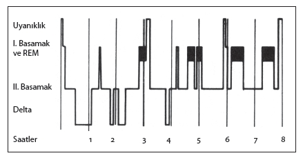
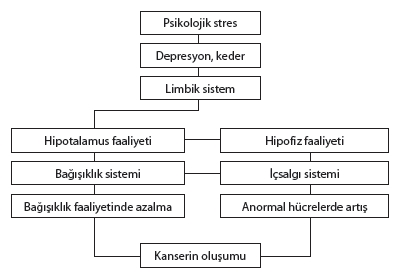
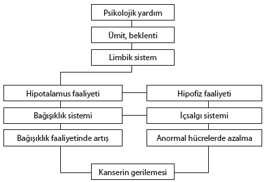

Holmes ve Rahe’in geliştirdiği Yakın Zaman Hayat Olayları Listesi’ne (Bkz. 3. Bölüm) bir göz atıldığı zaman, insanın en çok uyum yapmasını gerektiren 14 olayın 10 tanesinin aile ilişkileri ile ilgili olduğu görülür. Bu da aile ilişkilerinin bireyin sağlığını ne kadar yakından ilgilendirdiği ve bu ilişkilerin bireyin hayatında ne kadar önemli rol oynadığı konusunda kolayca fikir vermektedir.
İnsanların kalplerinin kırılmasının onları ölüme sürüklediği yolundaki eski inanç, bugün bilimsel olarak bir ölçüde doğrulanmaktadır.
Eşini kaybetmiş 55 ve daha yukarı yaşta kimseler arasında yapılan bir araştırmada, 6 ay içinde meydana gelen ölümlerin böyle bir problemi olmayan aynı yaş dilimi içindeki insanlara kıyasla % 40 daha fazla olduğu bulunmuştur. Bu ölümlerin en başta gelen sebebi de, tahmin edilebileceği gibi kalple ilgili rahatsızlıklardır.
Avusturyalı Bartrop’un bir araştırmasında ise eşlerini kaybetmiş erkek ve kadınlarda, 8 hafta sonra bedenin bağışıklık cevabının son derece azalmış olduğu ortaya konmuştur. Böyle önemli bir kaybın meydana getirdiği stres insanlarda sadece hormon sistemini etkilememekte, aynı zamanda bedeni dışardan gelecek (enfeksiyona bağlı hastalıklar gibi) ve içerde meydana gelebilecek (kanser gibi) her türlü tehlikeden koruyacak olan direnç sistemini de (bağışıklık sistemini) etkilemektedir.
Görüldüğü gibi aile ilişkileri yolun sonunda bu kadar önem taşımaktadır. Ya başında!
Aile, sosyal, kültürel ve ekonomik bütünlüğü içeren bir sistemdir. Daha önce stres tepkisi anlatılırken, stresin bir uyum cevabı olduğu söylenmişti. Holmes ve Rahe geliştirdikleri ölçeklerinde ortalama bir evliliği 50 stres puanı karşılığı değerlendirmişlerdir.
Evlilik, geçmiş birikimleri, içlerinden yetiştikleri aileler, eğitim ve öğrenimleri, kültürleri birbirinden farklı olan iki kişinin hayatlarının geri kalan bölümünü birlikte geçirmeye karar vermesidir.
Evlilikte iki yetişkin insanın, birbirlerinin ruhsal ve fiziksel ihtiyaçlarını karşılamaları ve ekonomik bir denge kurmaları beklenir. Hiç şüphesiz bir evliliğin getireceği uyum problemi sadece bu sayılanlardan ibaret kalmayacak, bu kişiler aynı zamanda birbirlerinin aile çevrelerini paylaşacak, çocuk yetiştirecek, dost edinecek ve bunlar gibi sınırları kesin olmayan birçok konuda uzlaşmak zorunda kalacaklardır.
İnsanların aile, kültür, eğitim ve geçmiş birikim gibi özellikleri, bu alanlarda karşılarındakinden beklentileri bir bilgisayara verilse, bu özellik ve beklentilerle bütünüyle uyuşan bir eş bulmak mümkün olamazdı. Buna rağmen insanların pek çoğu bu karmaşık ve zorunlu programa, bir bölümü birbirlerini hiç tanımadan, aileleri tarafından verilen kararlara uyarak, daha büyük bir bölümü de çok kısa bir tanışıklık süresinden sonra kendileri karar vererek girişirler.
***
“Beni hasta ediyorsun” veya “Bu davranışın beni hasta ediyor”. Birçok ailede bu sözlerin karşılıklı olarak söylendiğini hepimiz biliriz. Her ne kadar bu ifadeleri kullananlar söylediklerini kelime anlamı olarak düşünmüyorlarsa da, bu ifade gerçekte çok kere duygusal gerginlik ve çatışmaların insanı bedensel bir hastalığa sürükleyeceğini çok kesin bir biçimde yansıtmaktadır.
Aile içindeki çatışmaların, hastalık belirtilerinin ortaya çıkmasını hızlandırdığı, bugün kesin olarak kabul edilmektedir.
Bu konuda bilim kitaplarına geçmiş bir örnek hayli ilginçtir. Damadıyla ilişkileri olumlu olmayan bir kayınvalidenin kızını ziyaretinden bir gün sonra, anne uykusuzluk, damat egzama, kız depresyon sebebiyle doktordan yardım istemiş, annenin evine dönmesiyle her üç hastanın da belirtileri kendiliklerinden ortadan kalkmıştır.
Bir hastalığın meydana gelmesinde kalıtımla ilgili yatkınlıkların, belirli organ veya beden sistemlerinin zayıflıklarının, kişilik yapısının, streslerle başaçıkma gücü ve becerinin, inançlar ve beklentilerin derece derece çok önemli roller oynadıkları bilinir ve kabul edilir. Ancak hiç şüphesiz birinci derecede sebep olmasa bile, aile içi çatışmaların çeşitli hastalıkların ortaya çıkışını ve seyrini çok önemli ölçüde etkilediği gözden kaçırılmamalıdır.
Herhangi bir bedensel hastalığı olanların aile içi ilişkileri üzerinde yapılan araştırmalarda, çok büyük çoğunlukla hastalıktan nispeten kısa bir süre önce meydana çıkan veya alevlenen çatışma ve gerginlikler bulunmuştur.
***
Eşlerin içlerinde yetiştikleri toplumsal yapılar ne ölçüde farklı olursa, evlilik içinde sağlanacak uyumsuzluk, beraberliğin sürmesi için harcanacak çaba ve gündelik ilişkiler içinde tarafların yaşayacakları stres de aynı ölçüde artar.
Benzer güçlük eğitimle ilgili farklılıklar için de kaçınılmazdır. Erkeğin kadına kıyasla bir basamaktan daha fazla eğitim üstünlüğü, zevklere yansıyacak farklılıklardan başlayarak, özellikle çocuk eğitiminde zorlanmalar yaratacaktır. Eğitim üstünlüğünün kadın tarafında olması ise, akla gelebilecek her durumun ailenin bütünlüğünü tehdit edici bir öğe olmasına yol açacaktır.
Aynı biçimde eşlerin kendi ailelerinin birbirlerinden oldukça farklı ekonomik güçte olmaları da, birlikte sürdürülecek bir hayat için, özellikle başlangıçta, önemli uyum güçlükleri getirecektir.
Eşler arasındaki yaş farkının makul ölçüleri aşması bir evlilikte kaçınılmaz olarak çeşitli uyum güçlüklerine ve gündelik ilişkilerde gerginliklere yol açar. Makul yaş farkının kesin bir sınırı olmamakla beraber, eşlerin aynı heyecanı paylaşacakları konuların varlığı –ve bunların devamlılığına imkân verecek bir fark– “makul yaş farkı” sayılabilir. Bu fark, istisnalar bir yana bırakılır ve kişiden kişiye değişiklik gösteren özel durumlar da dikkate alınmazsa, 10 yaştan fazla değildir.
Aile hayatı içinde gündelik hayatın getireceği stres ve uyum güçlüklerini en aza indirmek konusunda, hiç olmazsa başlangıçta şanslı görülebilecek bir evlilik için bu evliliği paylaşacak eşlerin önemli ölçüde benzer toplum şartlarından gelmeleri, birbirlerine yakın bir eğitime sahip olmaları, ekonomik açıdan birbirlerinden çok farklı olmamaları ve makul bir yaş farkına sahip olmaları tavsiye edilebilir.
Halk arasındaki yaygın inanca göre, evli çiftler yıllar sonra birbirlerine benzemeye başlarlar. Her ne kadar eşler arasında fizyolojik bir benzerliğin zamanla doğması biraz şüpheli ise de, eşlerin hayatındaki birçok şeyin birbirine benzemeye başladığı doğrudur.
Eşler uzun yıllar boyu aynı evi, çocukları, cinselliği, ekonomik şartları ve aynı yaşantıları paylaşarak birbirleriyle aynılaşırlar, iç ve dış ritimleri bütünleşir. Bu açıdan bakıldığı zaman, eşlerin birbirlerinde potansiyel olarak var olan hastalıkla ilgili yatkınlıkları, ilişkilerindeki gerginlik ve aralarındaki çatışma biçimiyle artırabileceklerini düşünmek şaşırtıcı olmaz.
Bugün insanlığı tehdit eden birçok hastalık, kişide bir gece içinde meydana gelmemektedir. İnsanlar yüksek tansiyon, kalp, şeker, kanser gibi hastalıklara 46 veya 58 yaşında, yoldan veya içtikleri sudan kaptıkları bir mikrop sonucu yakalanmamaktadırlar. Bu hastalıklar genetik yatkınlıklarla birlikte, belirli kişilik yapılarının belirli hayat biçimleri ile etkileşmesi sonucunda meydana gelir. Bu etkileşim içinde aile ilişkileri çok önemli bir yer tutar.
Aile ilişkileri hastalığı başlatmak ve şiddetini etkilemek konusunda nasıl belirleyici olabiliyorsa, aynı şekilde aile içi ilişkiler hastalığın tedavisini etkilemek konusunda da önemli bir rol oynar. Yukarıda sadece birkaç tanesi sayılan günümüzün hastalıklarında “tedavi”, mikroba bağlı hastalıklarda olduğu gibi kısa süreli olmayıp, hasta bireyin önündeki hayatının bütününde devam edecek bir bakım ve dolayısı ile, hayat biçimidir.
Bu sebeple bu aşamada en önemli faktör, ailenin hastalıklı bireyini yaşatmaya yönelik ilişki, tutum ve yaşama biçimini benimsemesidir. Bu durum hem ailenin bütünlüğü açısından, hem de “hasta” açısından “hayati” önem taşımaktadır.
Bazı aileler bir hastalığın ortaya çıktığı durumlarda, kendiliklerinden hastayı yaşatmayı sağlayacak tutum ve tavır içine girerler. Ancak az sayıdaki bu tür ailenin dışında kalan büyük çoğunluk, içlerinden birini hasta etmiş davranış biçimlerini sürdürmeye devam eder.
İşte bu sebeple her türlü hastalığın tedavisinde hekimlerin sadece hastalığı olan kişiyi “hasta” olarak ele almak yerine, “aile ünitesini” bir hasta olarak ele almalarında büyük yarar vardır.
Akıl ve ruh sağlığının tehdit edildiği durumlarda, ruh sağlığı uzmanları, büyük çoğunlukla, bu gerçeği göz önünde tutarlar. Ancak “Stres Neden Günümüzün Problemi” bölümünde de değinildiği gibi, gerek hekimlerin yetişme biçimlerinin tek tek organlar konusunda uzmanlaşma yönünde olması, gerekse toplu sağlık hizmeti veren kuruluşlardaki (hastanelerin) hasta trafiğinin çok yüklü olması sebebiyle, ruh sağlığı dışında kalan tıp dallarında hasta ile ilgili aile ve çevre ilişkileri bütünüyle hesap dışı tutulur. Tıp eğitiminde ve günlük uygulamada yeni yetişen hekimler arasında, hastayı aile ve çevresi ile bir bütün olarak ele almayı gereksiz ve lüks görenlerin sayısı hiç de az değildir.
Aile ilişkileri nasıl hastalıkları başlatabiliyorsa, uygun iletişim ve işbirliği sağlandığı takdirde hastalığın tedavisinde ve bir daha ortaya çıkmamasında aile bireyleri arasındaki ilişki, yakınlık ve destekten yararlanmak da aynı ölçüde mümkündür.
Önceki sayfalarda aile hayatı içinde gündelik hayatın getireceği stres ve uyum güçlüklerini en aza indirmek konusunda, hiç olmazsa başlangıçta şanslı sayılabilecek bir evlilik için, gerekli görülen şartlar sıralanmıştı. Ancak şurası muhakkaktır ki, bir aile içinde bu faktörlerin kusursuz olarak tamam olması durumunda bile, ailenin stres ve gerginliklerden uzak bir hayat sürdürmesine “muhakkak” gözüyle bakılmaz.
Aile hayatında günlük ilişkiler içinde gerginlik ve stresin önemli bir bölümü, aile bireylerinin, birbirleriyle olan ilişki biçiminden kaynaklanır. Aileyi oluşturan kişilerin birbirlerine yargılayıcı, denetleyici, üstünlük belirten tavırları, bu tavrın yöneldiği kişileri problemin özünden kopartıp, kendilerini savunmaya zorlar. Bu durum hem eşler arasındaki ilişkiler için hem ana-baba ve çocuklar, hem de kardeşler arasındaki ilişkiler için geçerlidir.
Yargılamaya, denetlemeye ve üstünlük belirtmeye yönelik tavırlar, “kötü”, “yanlış”, “ayıp” biçimindeki yaklaşımlar aile ilişkisi içinde bu tavrın yöneldiği kişilerin daha yetersiz olduğu varsayımına dayandığı için, aile bireyleri arasında hem sürekli bir gerginliğin doğmasına, hem de daha önemlisi, gelecek günlerde benzer sürtüşme tohumlarının atılmasına sebep olur.
Toplumumuzda kişisel olarak yaptığımız ilginç gözlemlerden bir tanesi, aile bireylerinin birbirlerinin davranış ve hayatlarını sınırlamak konusundaki önüne geçilmez istekleridir. Çocuklukları, anne-babaları tarafından yöneltilen bu sınırlamalarla geçen bireyler, kendi yetişkinliklerinde ve anne-babalarının yaşlılıklarında adeta kendi çocukluklarının rövanşını almakta ve hayatlarıyla ilgili son derece anlaşılmaz gibi gözüken, antidemokratik bir tavır içine girmektedirler. Bu tavır içinde bir önceki paragrafta sözünü ettiğimiz yargılamaya, denetlemeye ve üstünlük belirtmeye yönelik yaklaşımlara bol miktarda rastlamak mümkündür.
Aile ilişkilerinde samimiyetsizliğe ve gerginliğe yol açacak tutumlar arasında “Bakalım bunun altından ne çıkacak?” izlenimini veren yaklaşımlar önemli yer tutar. İçten pazarlıklı ve dürüst olmayan böyle bir yaklaşım biçimi, aile üyelerinin birbirlerine yakınlaşmasını önler.
Aynı şekilde, “bu konuda bir tek doğru vardır, o da benim söylediğimdir” diye formüle edilebilecek olan, “kesin” üsluplu tavırlar da, aile geleneği içindeki otoriter ve kestirme yaklaşımın uzantısıdır. Tartışmaya ve karşılıklı uzlaşmaya kapalı bu tür antidemokratik yaklaşımlar ister eşler arasında olsun, ister çocuklara yönelsin, belki ilk bakışta aile içinde bir denge varmış izlenimini verirse de, temelde aile bireylerini birbirlerinden duygusal olarak uzaklaştırır ve yaralar.
Nasıl davranmalı?
Aile içinde dostça bir sıcaklığın ve yakınlığın doğmasına imkân verecek yaklaşımlar arasında, duyguların doğal olarak ifade edildiği karşılıklı bir ilişki zemini oluşturmak, aile bireyleri arasında karşılıklı güveni ve işbirliğini sağlayacak eşit ilişki şartlarını yaratmak ve bir konu ile ilgili çeşitli çözüm yolları olabileceğini kabul edip, kesin ve mutlak bir tavır içine girmemek sayılabilir. Aynı biçimde, aile içi ilişkilerin gerginleştiği ve sık sık çatışmaların çıktığı durumlarda, aile bireylerinin günlük problemlere geçmiş olayların bilançosunun verdiği birikimle yaklaşmamaları ve doğrudan o sıradaki probleme yönelmeye gayret göstermeleri, aile içi çatışmaları yatıştırıcı çok önemli bir yaklaşım şeklidir.
Rol kavramındaki değişimden yansıyan stresler
Türk toplumunda çekirdek aile yapısında yaşanan önemli stres sebeplerinden bir tanesi rol kavramındaki değişimdir. Batı toplumlarında da günümüzde kadın ve erkeğin giyim, toplumsal davranış, öğrenim ve meslek açısından yüzyıllardır yerleşmiş olan farklılıkları giderek azalmaktadır. Batı tarzı hayatın Türk toplumunda gittikçe daha yaygınlık kazanması, en azından şekilsel olarak bu hayat biçimine karşı özlemin artması beraberinde kaçınılmaz olarak bazı çatışmaları da getirmektedir.
Geleneksel aile yapısının en önemli özelliği, erkeğin mutlak üstünlüğü ve kadının ailedeki hak ve söz sahibi olma ölçüsünün, ailenin erkeklerinin uygun gördüğüyle sınırlı oluşudur. Öncelikle kadının ev dışında çalışmaya başlamasının, daha sonra diğer alanlarda da toplum içinde erkeklerle bir arada bulunmasının bir sonucu olarak, erkekler kadınların eşit hak talepleriyle karşı karşıya kalmışlardır. Özellikle Cumhuriyet döneminde bu hakların kâğıt üzerinde tanınmış, ancak uygulanmasının –belediye yasaklarında olduğu gibi– yıllarca erkeklerin keyfine kalmış olması, ekonomik şartların zorlaması sonucu çalışmaya başlayan kadını geleneksel görevlerini de sürdürmeye mecbur bırakmıştır. Fakat artık kadınların çalışma hayatına girişinden bu yana iki kuşağın geride kalmış olması bazı şeyleri yavaş da olsa değiştirmeye başlamıştır.
Eşi gün boyu kendisi gibi çalışan bir erkek, kendisinden yardım isteyen karısını reddetmek konusunda tereddüde düşmektedir. Bir taraftan, eşine yardımcı olmazsa ona haksızlık edeceğini hissetmekte, diğer taraftan eşine yardımcı olursa babasından ve büyükbabasından kendisine miras kalan erkeklik üstünlüğünü kaybettiğini düşünerek rahatsız olmaktadır.
Aile geleneğinde mutfakta eşine yardım etmek, çocuğun bakımı ve beslenmesi ile ilgilenmek bulunmayan erkek, çalışan eşine yardımcı olduğu zamanlarda, bu sıkıntıyı sık sık yaşamaktadır. Bir bölüm erkek nişanlılık ve ilk evlilik döneminde bu yardımı eşine vaat etmekte ve vermekte, ancak evliliğin ilerleyen yılları içinde çeşitli nedenlerle kendisini bu işlerin dışına atmaktadır. Bu da eşler arasında kaçınılmaz olarak gerginlik ve sıkıntıların doğmasına sebep olmakta ve çoğunluk kadının haksızlığa uğradığı duygusundan kaynaklanan birikimler, patlamaların başka alanlarda ortaya çıktığı çatışmalara yol açmaktadır.
Evlilik hayatının düzenli ve uyumlu yürümesini sağlayacak önemli öğelerden bir tanesi dayanışmadır. Her evliliğin kendine ait çok özel şartları ve dengeleri vardır, ancak bu özel şart ve dengeler içinde de “dayanışma” kavramı önemini ve ağırlığını korumaktadır.
Evlilikte amaç; eğer bir hayatın beraberce mutlu ve uyum içinde yaşanması ise, mümkün olan en çok şeyin birlikte yapılması, bu amacı gerçekleştirmeye imkân sağlar.
Evlilikte denge
Daha önceki sayfalarda bir evlilik içinde uyumu kolaylaştıracak şartlar sıralanmıştı. Bu dış şartlar arasında sıralanmamış, ancak en az bu şartlar kadar önem taşıyan başka şartlar daha vardır.
Bunların başında eşlerin kişilik özellikleri gelir. Bir beraberlik içinde uyumu ve dengeyi en çok zorlaştıracak olan kişilik özelliği “katılık”tır. Katılığın tam tersi olan kişilik özelliği de “esneklik”tir.
Olaylara ve ilişkilere sadece ve sadece kendi açısından bakan, günlük hayatın akışı içinde, kendi kafasında planladığından başka bir şeye kesinlikle tahammülü olmayan kimseler, bir beraberliği kısa sürede “yaşanmaz” hale getirirler.
Halk arasında evlilikle ilgili son derece yaygın bir inanç vardır. “Evlilik uzlaşmadır” denir. Kulağı ve gönülleri okşayan bir ifade ne yazık ki, bunu kullananların kastettiği anlamda geçerli değildir. Eğer bir karı-kocanın herhangi bir tutum veya zevk konusunda iki ayrı uçta olduğu düşünülüyor ve bir orta noktada buluşulacağına inanılıyorsa, bu yanlıştır. Çünkü başlangıçta eşler böyle bir iyi niyet gösterisinde bulunsalar bile, bir süre sonra yapmak veya uymak istemedikleri bir durumu sürdürmenin yaratacağı stresle, karşılarındaki insana başka alanlarda tahammülsüzlük göstereceklerdir. Kendisinin fedakârlık yapmakta olduğunu düşünen kişi, bunun bedeli olarak karşı taraftan da fedakârlık bekleyecektir. Bunu bulamazsa huzursuz olacak, bulursa karşı tarafı zorlamış olacak ve bu gerginliklerin başka alanlarda çatışmaları alevlendirmesi kaçınılmaz olacaktır.
Aynı biçimde bir uyum çabasının yorduğu kişi, ilk fırsatta bundan vazgeçmenin çarelerini arayacak, karşı tarafı suçlayacak ve bir sebep yaratacak, kendi uyum çabasının ya takdir edilmediği, ya da önemi olmadığı düşüncesiyle veya başka bir bahane ile eski noktasına –kendi tutum ve davranışına– geri dönecektir.
Bu sebeple evlilik gibi hayat boyu sürmesi amaçlanmış bir beraberliğe başlarken, temel şart karşısındakini olduğu gibi görmek ve –en önemlisi– olduğu gibi kabul etmektir.
Karşısındakini ve kendisini değiştireceğini düşünmek, başlangıçta zevkli ve heyecanlı ancak sonuçta hayal kırıklığı ve üzüntü doğurucudur. Beraberlik içinde işler çok iyi giderse, o zaman belki taraflar, birbirlerine doğru bir küçük adım atarlar. Ancak yine de, çok mesafeli durulan bir konuda orta noktada birleşileceğini düşünmek hatalı olur.
Konuya bu açıdan bakıldığı zaman, başlangıçta sözünü ettiğimiz “esnek” kişilik özelliğinin önemi kendiliğinden ortaya çıkar. Kişiliğinde “esnek”lik, özelliğini barındıran kimse, olayları ve insanları oldukları gibi görmeye ve insanları kendi biriciklikleri içinde kabul etmeye ve saygı göstermeye daha yakındır. Kabul edemediği noktada da, problemi gerçek cephesi ile teşhis edip, tedbirlerini ona göre alabilir.
“Evlilik uzlaşmadır”. Doğru! Ancak evlilik önce kişinin kendisiyle uzlaşmasıdır. İnsan kendisi ile uzlaşmayı başarabilirse, beraberliğini gerginlik ve stresten uzak sürdürebilir. Böylece en başta kendi, daha sonra da eşinin ve yetiştirdiği çocukların ruh ve beden sağlıklarına doğrudan katkıda bulunmuş olur.
Bir evlilik içinde stres azaltacak önemli öğelerden bir tanesi de evliliğe ve onun getirebileceği problemlere “hazırlık”tır. Böyle bir hazırlıktan yoksun bireyler –hazırlıklı olanlara kıyasla– beraberlikleri konusunda çok daha fazla tereddüde kapılmakta, bu da sürekli bir stres kaynağı olmaktadır.
Yalnızlık
Erken yaşta yapılan bazı evliliklerin başarısız olma sebeplerinin önemli bir tanesinin altında “yalnızlık” duygusunu ve olgusunu yeterince tanımamak yatmaktadır.
İlkgençlik döneminin yakın ilişkileri, şakacılığı ve eğlencesi içinde evlenen gençler, daha sonra yılların geçmesi ve çeşitli birikimlerin beraberliği yıpratması sonucu, kendi kendilerine şu soruyu sorar duruma gelmektedirler: “Bu beraberliği neden sürdürüyorum?”
Bu arada çevrelerinde gördükleri karşı cinsten çeşitli kimseleri hiç olmazsa zihinlerinde tartmakta ve hayatlarını o sıradaki eşleriyle sürdürmek yerine, “şu veya bu kişiyle de” bir beraberliği pekâlâ sürdürmenin mümkün olduğunu hissetmekte veya düşünmektedirler.
İç ve dış gerginliklere dayanamayarak çözülen evliliklerde, kişiler serbest kalmanın verdiği rahatlığı kısa bir süre yaşadıktan sonra, büyük bir boşluk ve yalnızlık duygusunun içine düşmektedirler. Çünkü ilkgençliğin sürekli yakın ilişkileri –her gün gitmek gelmek, telefonlaşmak gibi– orta yaşlarda kurulamamaktadır. Bu ilişkilerin bir zamanlar kurulmuş olduğu eski arkadaşların hepsi dağılmıştır. Yeni arkadaşlarla da benzer ilişkiler ya aynı zevki vermemekte veya böyle bir ilişki mümkün olmamaktadır.
Diğer taraftan kişi evliliği süresinde zihninde tarttığı ve “cazip” bulduğu kimseler konusunda da hayal kırıklığına uğramaktadır. Çünkü ya bu cazip kimselerin bir bölümü zaten “angaje”dir, ya yüzeysel bir yaklaşımla cazip gibi gelen kimselere biraz yakınlaşmak onların hiç de sanıldığı kadar cazip olmadıklarını ortaya koymaktadır veya “cazip” gibi görünen ve orta yaşlarına kadar yalnız kalmış kimselerin, sürekli bir beraberlik kurmamak için kişiliklerinden veya şartlarından kaynaklanan sebeplerinin olduğu fark edilmektedir.
Böylece kişi her günün sonunda geceler boyu uzayıp giden bir yalnızlığı ve çaresizliği yaşamaya başlamakta, bir davete veya gece gezmesine gidecek bir arkadaş bulmak, kendine özgü sebeplerinden ötürü, erkekler için de kadınlar için de kolay olmamaktadır.
***
Yalnızlık duygusunu tanımak, hiç şüphesiz genç yaşta yapılmış ve boşanmayla sonuçlanmış evliliklerin hepsini kurtarabilirdi, diye düşünmek hatalı olur. Ancak evliliği sürdürmeye kararlı olmak ve onun getireceği problemlere “hazırlıklı” olmak, kişinin olayları algılayış, yorumlayış ve dolayısı ile davranış biçimini etkileyecek çok önemli bir öğedir.
Cinsellik
Aile ilişkisi içinde eşler arasında doğacak ve gündelik hayatın getirdiği streslerin sınırını aşacak, önemli gerginlik kaynaklarından bir tanesi de cinselliktir. New York Üniversitesi’nden G. Ferben’in, bütün ülkeyi temsil eden bir örnekler grubunu oluşturan, çoğunluğu evli 18-40 yaşları arasında 1008 kişiyle sürdürdüğü bir araştırmada en büyük stres kaynağının toplumun cinsellik konusundaki tutumunun değişikliği olduğu bildirilmiştir. Cinsel ilişkilerde daha çok serbestlik ve daha çok hoşgörü yönünde olan bu tutum değişikliğinin Amerika Birleşik Devletleri gibi bir toplumda en önemli stres kaynağı olarak yorumlanması ilginçtir.
Bu bulgunun Türk toplumunda yaşayanları düşündürmesi gereken önemli yönleri vardır. Cinsel açıdan büyük tabular, baskılar altında olmak ve cinsel eğitimi aile, okul gibi her türlü kurumun dışına çıkarmak nasıl stres verici, gerginlik ve kaygı doğurucu sağlıksız sonuçlar yaratabiliyorsa, bu konuda elde edilen özgürlüğün de büyük bedelleri olmaktadır.
Evlilik kurumunu ayakta tutan önemli öğelerden biri “sadakat” olduğu için, bu konudaki sapmalar beraberlikleri derinden sarsmakta ve hayatın bütününe yansıyan birlikte yaşamayı güçleştiren önemli bir stres kaynağı olabilmektedir.
***
Duygusal olgunun ölçütlerinden bir tanesi, tatmin edici bir cinsel ilişki içinde bulunmaktır. Diğer taraftan cinsel uyum fiziksel rahatlığı da beraberinde getirdiği için, hayatın bütününü daha kolay karşılamayı mümkün kılar.
Cinsellik, ruh ve beden sağlığı açısından “mutlak” bir gereklilik olmamakla beraber, çok önemli bir tamamlayıcıdır. Bu konudaki daha önemli bir belirleyici, kişinin cinsellik konusundaki tavrıdır.
Cinselliği hiç tanımayan bir insanın, bunun yokluğuna katlanması, tanıyan birine kıyasla daha kolaydır. Bu konuda evlenmemiş hanımlar arasında, cinsel tecrübesi olanlarla olmayanlar örnek verilebilir. Diğer taraftan cinsellik konusunda beklentisi ve özlemi olanların, bu konuda özlemi ve beklentisi olmayanlardan daha gergin olmaları kaçınılmazdır. Çünkü özlem ve beklenti içinde olanlar kendilerini zihinsel olarak uyaracak, bu da cinsel açıdan fizyolojik sonuçlar (bazı salgı bezlerinin harekete geçmesi gibi) doğuracaktır.
Cinsellik konusunu kafalarından uzak tutanlar ise, organik açıdan bu tür bir faaliyet içinde olmayacaklar ve dolayısı ile daha az gerginliğe sürükleneceklerdir. Hayatlarını, cinselliği tatil etmiş veya bu olguyu bütünüyle hayatından çıkartmış olarak sürdüren ve aşikâr bir güçlük çekmeyen birçok kişi vardır.
Ancak daha önce de belirtildiği gibi cinsel uyum ruhsal ve fiziksel açıdan rahatlık sağlar, bu da hayatın bütün cephelerine yansıyan bir rahatlığın doğmasına sebep olur.
***
Evlilik içinde eşlerin kendi yeterliliklerinden şüpheye düştükleri, tatmin olamadıkları, çekiciliklerini kaybetmekten korktukları zaman olur. Bunlar evlilik içinde öteden beri var olan stres ve kaygı kaynaklarıdır. Ancak bugünün ailesi için yeni olan, G. Serban’ın araştırmasında ortaya koyduğu gibi cinselliğin geçmişe kıyasla daha açık düşünülmesi ve konuşulabilmesidir.
Cinsel problemler, sadece cinsel eylemle sınırlı kalmadıkları, ilişkinin ve hayatın bütününe yansıdıkları için özellikle önem taşırlar.
Cinsellik konusunda bütünüyle kapalı kalmanın ve cinselliği yok saymanın yarattığı stresleri kendi toplumumuzdan, bu konuda ileri düzeyde serbestlik içinde olmanın doğurduğu stresleri ABD’den öğrendikten sonra, cinsellik gibi çok yönlü bir konuda alınacak tavrın “açıklık” veya “kapalılık” gibi basit yaklaşımlarla saptanamayacağı ortadadır.
Cinsellik konusu insan hayatının bütün alanlarına uzanan sonuçlar veren çok boyutlu bir konu olduğu için, cinsellikle ilgili bilgilerin mutlaka eğitim sistemi içinde yer alması gerektiğini belirtmekte yarar vardır.
Eşlerin kendi aralarında bir denge kurup uyumlu bir beraberlik sürdürmeleri durumunda bile aileye katılacak bir çocuk önceden kestirilmesi imkânsız uyum problemlerini de beraberinde getirir. Çünkü aileye yeni bir bireyin katılması, iki kişi arasında var olan etkileşimi pek çok açıdan değiştirmektedir.
Türk toplumunda halk arasındaki yaygın bir inanç, yolunda gitmeyen bir evliliği, doğacak bir çocuğun kurtaracağıdır. Böylece evin dışında ilişkileri veya içki, kumar gibi alışkanlıkları olan erkeğin evine bağlanacağı varsayılmaktadır. Halbuki eğer eşler kendi aralarında sağlıklı bir iletişim zemini oluşturamamışlarsa, aileye eklenecek bir çocuk, anlaşmazlıkları daha da derinleştirecektir.
Aynı durum aileler için de geçerlidir. Eğer iki aile, birbirleri ile anlaşmaya, çocuklarının hatırına, birbirleri ile uzlaşmaya özen gösteriyorlarsa, doğacak olan bir çocuk iki aileyi birbirine yaklaştıracaktır. Böyle bir ortamda, eğer varsa anlaşmazlıklar törpülenecek, ilişkiler yumuşayacak ve aileye katılan küçük bebek yakınlaşmayı ve mutluluğu geliştirecektir.
Fakat iki aile arasında sözlere dökülmüş veya dökülmemiş olumsuz duygular, anlaşmazlıklar varsa, doğan çocuk bu anlaşmazlıkları ve ayrılıkları artıracaktır. Çünkü çocuk, ailelerin birbirleri ile ilgili karşılıklı eleştirilerini ve karşı tarafta yetersiz buldukları yönleri ifade etmeleri, dışlaştırmaları için bir araç olacaktır. Çocuğa yönelik fikir ve eleştiriler, ailelerin esas olarak kendi dünyaya bakış ve davranış biçimlerine yönelik olarak değerlendirilecek, bu durum ise saldırılar ve alınganlıklar için mükemmel bir zemin hazırlayacaktır.
Diğer taraftan, daha önce de belirtildiği gibi, doğacak bir çocuğun, alkol, kumar gibi alışkanlıkları olan bir erkeği evine bağlayacağı düşüncesi ise, ne yazık tam bir “hüsnükuruntu”dur. Bu dilek belki ilk birkaç ay için geçerli olabilir, ancak daha sonrası için asla!… Sebebine gelince:
Alkole ve kumara eğilim, zayıf kişilere özgü kaçış ve sığınma yollarıdır. Zayıf kişiliği olan insanlar sorumluluk yüklenmekten hoşlanmazlar. Sorumluluklar bu tür insanları daha çok zorlar ve bunun sonucu alkole ve kumara olan ihtiyacın artması ve dolayısı ile erkeğin evinden daha çok uzaklaşması kaçınılmaz olur.
Çocuk veya çocukların aileye katılması önce fizik varlıklarıyla, bunun hemen ardından psikolojik varlıklarıyla, daha sonra da kendi toplumsal özellikleriyle farklı bir dinamizmi aile yapısına sokmaktadır. Böylece aile içindeki ikili iletişim, üçlü, dörtlü, iletişime dönüşerek, çok yönlülük ve zenginlik kazanmaktadır. Uygun olan, eşlerin artan bu iletişim zenginliğine en olumlu biçimde katkıda bulunacak tahammül ve hoşgörüde olmaları, bu konuda hazırlıklı ve donanımlı bulunmalarıdır.
Çocukluk ve gençlik, gelişimi açısından hızlı bir dönem olduğu için, bu dönemin özünde gelişimsel nitelikteki stresler vardır. Bu sebeple çocukluk ve gençlik aileye, uyum sağlanması gereken birçok yeni durumu da beraberinde getirir.
Dünyaya gelen bir çocuğun, dengesi ve uyumu “mükemmel” olan bir aile düzeninde bile strese yol açıp bir uyum problemi doğurduğu düşünülürse, kendi iç dengelerini kuramamış ailelerde bir çocuğun çok daha büyük problem ve gerginliklere sebep olması kaçınılmazdır.
Hasta çocuk
Aile ve çocuk ilişkisinin ilginç yönlerinden bir tanesi de, “hasta çocuk” veya başka bir ifadeyle “hastalıklı çocuk”tur. Gerek araştırmaların ortaya koyduğu sonuçlar gerekse klinik gözlemler açısından, hasta çocuğun büyük çoğunlukla aile içindeki sağlıksız ilişkilerin ve çatışmaların bir aracı olduğu defalarca yazılmış ve söylenmiştir.
Çok büyük ve önemli hastalıklar bir yana bırakılırsa, çocuk bütün özellikleri, beceri ve beceriksizlikleri, ruh ve beden sağlığı ile ailesinin ürünüdür. Bu sebeple sağlık ve davranış problemleri olan çocuğa eşler arasındaki bir “kısa devre”, bir “masum kurban” gözüyle bakmak fazla abartılmış bir bakış açısı değildir.
Minuchin, çocukta meydana gelen psikosomatik krizi iki döneme ayırmıştır. Başlangıç döneminde aile içinde meydana gelen herhangi stres verici bir olay, çocukta hastalığın meydana çıkmasına sebep olan bedensel cevabı tetiklemektedir. Bu hastalık astım, diyabet veya karın ağrısı olabilir. İkinci dönem stres verici olayın çözülmesi ve aile içindeki krizin bitmesiyle –ve böylece– bedensel cevabın normal düzeye dönmesi dönemidir. Ancak bazı ailelerde stres düzeyi her zaman yüksek kalmakta, kriz bitmemekte veya biten krizi bir yenisi izlemektedir. Böyle ailelerde çocuğun hastalığı devam etmekte ve çoğunlukla belirtileri tıbbi yardımla kontrol etmek güçleşmekte veya imkânsız hale gelmektedir.
Minuchin’in bu görüşü hiç şüphesiz bütün hasta çocukların durumunu anlatan bir açıklama değildir, ancak bu yaklaşım, aile içi uyum veya uyumsuzlukla açıklamanın kimsenin aklına getirmediği birçok hastalığa ve “hasta çocuğa” ışık tutmaktadır.
Bazı ailelerde dengenin, ailenin hasta bir bireyi sayesinde ayakta durduğu, aile psikolojisi veya tedavisini konu alan kitapların vazgeçilmez bölümüdür. Konuyla ilgili olmayanlara yabancı geleceği için açıklama yapmak yararlı olacaktır. Ailenin hastalıklı bireyi ve onun getirdiği problemler, ailenin dikkat noktası olarak, aile içindeki temel anlaşmazlık ve çatışmaların ortaya konmasına engel olur.
İşte bu tür birçok ailede, aileyi dağılmaktan koruyan ve sahte bir dengenin sürmesini sağlayan hasta birey, “hastalıklı çocuk”tur. Bazı kitaplarda; ailenin, hasta çocuğunun iyileşmesine tepkide bulunduğu ve bunu engellediği bile yazılmıştır. Bu gibi durumlarda yapılacak olan, aileye kendi çelişki ve çatışmalarını tanımaları konusunda yardımcı olmaktır.
Eşler beraberliklerini sürdürmelerinin imkânsız olduğunu anladıkları zaman boşanma yolunu seçerler. Boşanma karşılıklı anlaşılarak ortak bir karar olsa bile, insan hayatında birçok değişikliği de beraberinde getiren çok önemli bir stres kaynağıdır. Boşanma Holmes ve Rahe’nin ölçeğinde en çok stres veren olaylar sıralamasında –eşin ölümünden sonra– ikinci sırada yer almaktadır.
Bir evliliğin sona erdirilmesi taraflar için önceden bütün yönleri kestirilmesi imkânsız birçok problemi de beraberinde getirir. Bu problemlerin boyutu ve şiddeti, evlilik süresinin uzunluğu ve çocukların sayısı ile doğru orantılı olarak artar.
Kısa süreli evliliklerde –eğer çocuk da yoksa– tarafların yüklendiği stres, başlangıçta ailelerin yaptıkları maddi harcamalar ve bir evliliği sürdürmek konusundaki başarısızlık duygusundan kaynaklanır. Ayrıca taraflardan birisinin diğerini açık olarak istememesi durumunda da, reddedilen tarafın incinen gururunu onarması zaman alır. Erkeğin reddedildiği bazı durumlarda, hoş olmayan tavır ve davranışların ortaya çıkmasına, fizik güç kullanılmasına ve saldırganca davranışların görülmesine rastlanabilir.
Kısa süren evliliklerde, bir taraftan ortak kazanılanların fazla olmayışı, diğer taraftan eşlerin her ikisinin de önlerinde yaşanacak bir hayat ve beklentilerinin olması, yeni bir uyum yapmayı ve boşanmadan doğan stresi yenmeyi kolaylaştırmaktadır.
Ancak uzun süren evliliklerde, karı-kocanın beraberlikleri süresinde ortak olarak biriktirdiklerini –her iki tarafı da ikna edecek dürüstlük ve hakkaniyet ölçüleri içinde– bölüşmeleri mümkün olmamaktadır. Gerçekten de, iki kişinin ortak olarak sürdürdükleri hayat içinde kazanılan her şey konusunda hangi tarafın daha çok hakkı olduğuna karar vermek imkânsızdır.
Bir taraftan uzun yılların biriktirdiği olumsuz duygular, diğer taraftan böyle bir bölüşmenin tarafları memnun edecek biçimde yapılmaması ve hepsinden önemlisi kişilerin gelecekle ilgili beklenti ve şanslarının bir hayli sınırlanmış olması yüzünden, 20 yıldan uzun süren beraberliklerin ayrılıkla sonuçlanması, taraflar için son derece önemli bir stres sebebidir.
***
Uzun yıllarını belirli bir kişi ile geçirmiş, olumlu veya olumsuz birçok alışkanlık edinmiş ve ortak dostlar kazanmış olan kişi; evinde, alışkanlıklarında, dostlarında hatırı sayılır değişikliklere katlanmak zorunda kalacaktır. Bir de bütün bu sayılanlara ortak çocukların bölüşülme zorunluluğu ile ilgili güçlükler eklenirse, boşanmış eşlerin karşı karşıya oldukları zorluklar konusunda çok basit düzeyde bir fikir edinilmiş olur.
Bir başka önemli konu da, eşlerin –kaçınılmaz olarak zaman içinde karşılıklı oluşan– birbirleri ile ilgili olumsuz duygu ve düşüncelerinin onları zorlaması, gerginlik yaratması ve dolayısı ile ruh ve beden sağlığını olumsuz etkilemesidir.
Bu sayılanların dışında eşlerden birinin, ya evlilik içinde geliştirdiği bir beraberliğe yönelmesi veya boşanmanın hemen ardından yeni bir beraberlik içine girmesi, yalnız kalan eş için ayrı ve önemli bir stres kaynağıdır. Durum, yeni bir beraberliğe yönelen kişi açısından da çok kolay değildir. Çünkü uzun yılların getirdiği alışkanlıkları kısa sürede terk edip, yeni beraberliğin yeni şartlarına uyum sağlamak da zaman alacak zahmetli bir durumdur.
Boşanma uzun yıllar içinde kazanılmış maddi imkânların sağladığı belirli bir konfor ve rahatlığın da terk edilmesini zorunlu hale getirir. Eşlerin –birinin veya her ikisinin çok varlıklı olmaları durumu dışında– hayat standardında kaçınılmaz olarak bir düşüş olur ve daha sınırlı yaşamak zorunluluğu ortaya çıkar. Konunun bu yönü ayrı ve hayatın bütününü ilgilendirdiği için, çok önemli bir stres kaynağıdır.
Boşanma ve Çocuk
Boşanmanın en olumsuz yönlerinden birisi de çocuklar üzerindeki etkisidir. Hangi yaşta olurlarsa olsunlar, çocuklar anne ve babalarını mutlu görmek isterler. Özellikle bir ayrılığa tahammül etmek ve anlayışla karşılamak konusunda çok zorlanırlar. Çocukların yaşı küçüldükçe, bu ihtiyacın ve güçlüğün şiddet ve yoğunluğu da artar, çünkü cinsiyetleri ne olursa olsun, çocuklar anne ve babalarına farklı ihtiyaçlarla bağlıdırlar. Bunu anne ve babanın tek başına karşılaması mümkün değildir. Anne ve babanın beraber yaşarken dikkat etmeyebilecekleri bu özellik, ayrıldıktan sonra bütün şiddeti ve ağırlığıyla tarafları zorlayan önemli bir stres kaynağı olur.
Çocuk güven duygusunu hayatının ilk yıllarında sevgi nesneleri ile olan ilişkisi içinde kazanır. Çocuk için en temel ve vazgeçilmez sevgi nesneleri anne ve babadır.
Depresyonlu hastalar üzerinde yapılan araştırmalar, çocuğun sevgi nesneleri ile olan ilişkisinde bir bozulmanın, hayatın ileri yıllarında, kendine güvenin kaybı anlamına gelen depresyona yol açtığını ortaya koymaktadır.
Bu konuda yapılan birçok araştırmanın ortak sonucu depresyonlu hastaların mutsuz ve zor bir çocukluk ve hayat geçirmiş olduklarıdır. Anne-babanın ayrılığının çocuğun mutsuzluğunun en başta gelen ve kesin sebebi olduğunu ayrıca hatırlatmaya gerek yoktur herhalde!
Anne ve babanın ayrılmasıyla çocuk sadece ileri yaşlarda güçlük çıkartmaz. Bu çocuklar büyük çoğunlukla gerek çocukluk, gerek ergenlik döneminde uyumsuz, hırçın, kötümser, saldırgan davranışlar gösteren, “problem-çocuk”, “problem-genç” olarak ortaya çıkar, doğrudan ve dolaylı sonuçları da anne ve babalarının yeni hayatlarına getirirler.
Boşanmaktan vaz mı geçmeli?
Bütün bu yazılanlardan çıkartılacak sonuç, boşanmanın çok kötü ve hiçbir zaman başvurulmaması gereken bir yol olduğu değildir. Hiç şüphesiz birlikteliği yürütmenin iki taraf için de imkânsız hale geldiği ve beraberliğin ıstırap kaynağına dönüştüğü bazı durumlarda boşanma kaçınılmaz olur.
Böyle bir durum söz konusu olduğunda, konuya çocuklar yönünden daha farklı bir açıdan bakmak mümkündür: Bir çocuk için çatışma içinde ve sürekli gerginliğin hüküm sürdüğü bir aile ortamında yaşamak yerine ayrı yaşayan bir anne ve babanın çocuğu olmak daha iyidir.
Burada anne ve babaya önemli görevler düşmektedir. Bunların başında çocuğun yanında eşini kötülememek gelir. Daha önce de belirtildiği gibi –kaç yaşında olursa olsun– çocuğun anne ve babasının iyi insanlar olduğuna inanmaya ihtiyacı vardır. Bu inancı ne pahasına olursa olsun sarsmamak gerekir.
Bu konuda en çok yapılan hata; “küçüktür, anlamaz”, veya “oyun oynuyor, bizim konuştuğumuzun farkında değildir”, diye düşünerek çocuğun yanında annesi veya babasıyla ilgili olumsuz konuları konuşmaktır.
Şunu her zaman akılda tutmak gerekir ki, çocuklar en geç bir yaşından başlayarak bu konuları şaşılacak kadar iyi anlarlar ve neyle meşgul görünürlerse görünsünler, kendileri için böylesine önem taşıyan bir konuda söylenen her sözü ses kayıt cihazı hassaslığı ile kaydederler.
Boşanmadan önce
Daha önceki sayfalarda boşanma ile ilgili olarak sıralanan olumsuzluklar, eşleri bekleyen güçlükler konusunda fikir verebilmek için kaleme alınmıştı. Hiç şüphesiz boşanma kararlarının pek azı eşler tarafından “bir anlık” kızgınlık sonucu verilmektedir. Ancak diğer taraftan boşanma kararı alan eşlerin yine pek azı, konunun yukarıda sıralamaya çalıştığımız karmaşıklığını göz önüne alarak böyle bir karara yönelmektedir.
İşte bu sebeple Holmes ve Rahe’nin uyum gerektiren hayat olayları ölçeğinde “boşanma”, “eşin ölümü”nün ardından 70 puanla ikinci sırayı almaktadır. Çünkü boşanma, kişinin sadece bir başka kişiyle birlikteliğini noktalaması anlamının çok ötesinde, karmaşık ve önceden kestirilmesi imkânsız sonuçlar veren ve kişiyi hayatın her alanında yeni bir uyum yapmak zorunda bırakan bir olaydır. Bu sebeple –mümkün olan durumlarda– eşlerin bir süre ayrı yaşamayı denemeleri, kararlarını bir kez daha gözden geçirme imkânı vermesi açısından çok yararlıdır. Bu süre içinde tarafların birbirleriyle olan ilişkilerini en alt düzeyde tutmaları veya –mümkünse– hiç görüşmemeleri de yerinde olur.
Bu bölüm içinde “yalnızlık” konusuyla ilgili olarak anlatılanlar burada da aynen tekrarlanabilir. Eşlerin bir süre ayrı yaşamaları, onlara başkalarına veya karşılarındaki kişiye “bir şeyleri” ispat etmek için verilmiş acele boşanma kararlarının sakıncalarını düşünmek imkânı tanıması açısından yararlıdır.
Boşandıktan sonra
Bütün bu anlatılanlardan sonra, beraberliği sürdürmenin iki taraf için de imkânsız olduğunun anlaşılması üzerine alınacak “ayrılık” kararının hızla uygulanması çok yerinde olur. Çünkü boşanma olayının ve bunu ortaya çıkaran gelişmelerin iki taraf için de “uzayıp gitmesinin” kronik bir stres doğurması ve olumsuz duyguları pekiştirmesi kaçınılmazdır.
İşlerin bu noktaya varmasından sonra yapılacak olan, yeni şartlara hızla uyum sağlamaya çalışmaktır. Bu amaçla en başta eski ile ilgili, kendi kendine düşünce düzeyindeki hesaplaşmalardan, ortak dostlar arasındaki sonuç vermeyecek tartışmalardan uzak durmak yerinde olur. Kişi geçmişe hayıflanmak yerine, hayatla ilgili şanslarını gözden geçirmeli ve bu şansları kullanmaya yönelmelidir.
Hiç şüphesiz insan, ne kadar gençse bu şanslar o kadar fazladır. Ancak unutmamak gerekir ki, insanın hayattan bekledikleri ve zevk aldığı konular her yaşta değişmektedir. Bu sebeple insanın kaç yaşında olursa olsun, hayat karşısında daima şansı vardır. Önemli olan, en başta bu şansları kullanmaya karar vermesi, daha sonra da bunu uygulamak üzere harekete geçmesidir.
Muhakkak ki, böyle bir davranışa yönelmek her zaman çok kolay olmaz. Unutmamak gerekir ki, çıkış yolu sadece ve sadece bu yöndedir; hayıflanmak, üzülmek ve suçlamakta değil! Kişinin bütünüyle geçmişin olumsuzlukları ile kuşatıldığı ve yeni bir hayata başlamakta güçlük çektiği durumlarda ruh sağlığı uzmanlarının çok değerli yardımlar yapmakta olduklarını hatırlatmakta yarar vardır.
Bazı ailelerde gerek dış dünyadan yansıyan streslerin aile hayatına yansıyan olumsuz etkileri, gerekse aile bireylerinin kendi aralarındaki ilişkilerden kaynaklanan çatışmalar, hem aile hayatını, hem de ailedeki kişilerin sağlığını tehdit etmektedir. Oysa bazı ailelerde bunun tersi yaşanmakta, aile hem dış dünyaya karşı daha dirençli olmakta, hem de kendi ilişkilerini sağlıklı ve çatışmasız sürdürmektedir.
Aileler arasındaki bu farkı belirleyen özellikler nelerdir? Aşağıda, bu soruya cevap vermek için yapılmış birçok araştırmadan elde edilen sonuçlar bir araya getirilerek toplu halde sıralanmıştır:
1. Ailenin dayanıklılığını sağlayan, aile üyelerinin ortaklaşa paylaştıkları inanç ve değerler sistemlerinin varlığıdır. Bireylerin katı kişilik yapısına sahip olmamaları gerekir. Görüş ve inançların tartışılabilir, gözden geçirilebilir ve yenilikler yapılabilir olması, farklılıklara saygı gösterilmesi aile içi uyumu kolaylaştırır.
2. Aile bireylerinin aktif, inisiyatif sahibi ve birbirlerine bağlı olması ve akıl ve beden sağlığının sürekli olarak eğitim, kültürel ilgiler ve fizik egzersizlerle yenilenip devam ettirilmesi büyük önem taşımaktadır.
3. Bu aileler, kuşakları açık seçik belirleyen bir yapıya sahiptirler. Eşler birbirlerine duygusal olarak bağlı, bütünleşmiş ve eşit ilişki için çocuklar kararlara katılır ancak hiçbir zaman aileyi yönetemezler.
4. Var olan problemler inkâr edilmek yerine kabul edilir ve bu problemlerle mücadele edilir. Bu aileler çoğunlukla daha az stres duyarlar.
5. Strese karşı dirençli aileler dostlarla, toplumla ve çeşitli topluluklarla çok sayıda ilişki ve bağ sürdürürler.
***
Ancak stres verici zor durumların sağlığı tehdit edecek boyutlara ulaşmaması için yapılması gereken, bu hayat dönemlerine ve bu dönemlerin özel güçlüklerine karşı hazırlıklı ve bilgi açısından donanımlı olmaktır.
1960’lı yıllarda, ABD’nin Pensilvanya eyaletine bağlı Roseto’da incelemelerde bulunan bilim adamları, elde ettikleri bazı sonuçlar karşısında şaşkınlıklarını gizleyemediler. ABD’de kalp krizinden ölüm oranı her 1000 kişide 3,5 olmasına karşılık, İtalyan asıllı Amerikalıların yaşadığı Roseto’da bu oran her 1000 kişi için sadece “1” dir. Roseto’da ayrıca başta ülser olmak üzere daha birçok hastalık Amerika ortalamasının çok altındaydı.
Doktorlar bu şehirde yaşayan insanların mükemmel sağlığına hayret etmekte haklıydılar. Çünkü Rosetolular kalp hastalığına yol açan standart risk faktörlerine önemli ölçüde sahiptiler. Örneğin, oldukça şişman olan Rosetolu kadın ve erkekler civar şehirlerde yaşayanlar kadar hayvansal yağ yiyorlar, yine civar şehirlerde yaşayanlardan fazla farklı olmayan ölçüde kolesterol, yüksek tansiyon ve diyabet problemleri ile karşı karşıya bulunuyorlar, tükettikleri sigara miktarı ve egzersiz düzeyleri de farklılık göstermiyordu. Fakat bütün bu faktörlere rağmen, genel sağlıkları civar şehirlerde oturanlardan çok daha iyiydi.
Araştırmacılar bütün genetik ve etnik faktörlerden doğabilecek farklılıkları ayırdıktan sonra Rosetolularda görülen genel sağlıklı durumunun “kültüre bağlı destekleyici özelliklerden” kaynaklandığını tespit etmişlerdir. Pensilvanya St. Lukes Hastanesi’nden S. Wolf, “Roseto kültürü eski dünyanın değerleri ve alışkanlıklarına inatla bağlılığı yansıtmaktadır” demiştir. Aile ilişkilerinin son derece yakın ve karşılıklı dayanışma esasına dayanması; bu yakın ilişki biçiminin aile sınırlarını aşarak komşuları ve topluluğun bütün üyelerini birleştirici bir nitelik kazanması da yapılan gözlemler arasında yer almıştır.
Araştırmacılar bundan başka yaşlıların sevilip saygı gördüklerini, hastalanmaları halinde ailelerinin evinde bakıldıklarını ve aile içinde birisinin veya bütün ailenin maddi bir problemle karşılaşması durumunda, akrabaların ve hatta bütün topluluğun ihtiyacı olan kimseye yardım elini uzattığını ve destek sağladığını gözlemlemişlerdir.
1960’ların ikinci yarısından sonra, Roseto’da bazı değişmeler meydana gelmiş. Örneğin, 30 yaşından genç Rosetolular geleneklere bağlılık ve çevrelerinden bir ölçüde kopuk yaşamaktan duydukları memnuniyetsizliği dile getirmişler ve orta sınıf Amerikalılar için geçerli olan belirli amaçlara yönelmeye başlamışlar. Bu amaçlar arasında işte ilerleme, daha geniş bir evde yaşama ve hayatı kolaylaştırdığı iddia edilen araç ve gereçlere sahip olmak sayılabilir. Bir süre sonra genç Rosetoluların birçoğu Cadillac araba sahibi olup, eski geleneksel ahşap evlerinin yerine yeni stil banliyö villalarında oturmaya başlamışlar. Bütün bunların sonucu olarak Roseto’da hayatın görüntüsü kısa zamanda değişmiş.
Yukarıda sayılanların yanı sıra Roseto’da bir şey daha değişmiş. Kalp krizlerinden ölüm oranı! Özellikle 55 yaşından genç erkekler arasında kalp krizinden ölüm oranı ABD ortalamasına yaklaşmış.
Hiç şüphesiz Roseto bu konuda tek örnek değildir. Her ne kadar bir hastalığa yol açan birçok faktör varsa da, yapılan araştırmalar, kültürel bağların kopmasının ve insanların bağımsızlaşmasının birçok hastalığın ortaya çıkması, hızlı seyretmesi ve güç tedavi edilmesi konusunda çok önemli bir belirleyici olduğunu ortaya koymaktadır.
Hamilelikte duygusal desteğin önemi
Bağımlılık ve sosyal destek konusunda Holmes ve Rahe’ın “hayat değişikliklerini” ölçen “Stres Düzeyleri Ölçeği” ile yapılan bir araştırma da oldukça ilginç bir sonuç vermiştir.
Yüksek hayat değişiklikleri puanına sahip olan ve yakın çevrelerinden gördükleri destek yetersiz kalan kadınlarda, hamilelik ve doğum komplikasyonuna rastlanma ihtimalinin çok yüksek olduğu görülmektedir.
Buna karşılık, benzer yükseklikte hayat değişiklikleri puanına sahip olan kadınlar, eğer eşlerinden, ana-babalarından veya kardeşlerinden duygusal ve ekonomik destek göreceklerine inanıyorlarsa, hamilelik ve doğum komplikasyon düzeyi son derece düşük olmaktadır.
Bir başka ifadeyle, “sosyal destek”, insanları hayat değişikliklerinin stres dolu etkilerinden koruyabilmektedir. Bu noktada önemli olan, kişinin sevildiğine ve grup tarafından kabul edildiğine olan inancıdır. Bir başka önemli nokta da, kişinin ait olduğu toplumsal değer ve normlarının, kişinin içinde yaşadığı toplumsal çevrenin ortak değer ve ölçüleri ile uyuşmasıdır (Bu konudaki en iyi örnek, Batı ülkelerinde yaşayan Türk işçilerinin durumudur).
Büyükanne ve babaların da birlikte yaşadığı geniş aile düzeni içinde bulunmanın doğurabileceği bazı kaçınılmaz sonuçlar vardır.
Yaşlıların gençleri denetleme istekleri, onların büyüyüp yetişkin bir insan olduklarını kabullenmekte güçlük çekmeleri, kardeşlerin birbirleriyle olan ilişkilerinden doğan gerginlikler, bu konuda kolayca akla gelen sakıncalardır. Bunun hemen ardından, geniş aile düzenlerinin kaçınılmaz sonuçları arasında, evli kardeşlerin ve onların eşlerinin ve çocuklarının birbirleriyle ilişkilerinden kaynaklanacak problemlerin, bazen bu şartlar içinde yaşayan insanların hayatlarını bütünüyle gölgeleyebilmesi sayılabilir.
Bütün bunlardan başka, yaşlı veya hasta aile üyelerine bakmak için, kendi hayatlarından maddi ve manevi fedakârlık yapmak zorunda kalan kimselerin, duydukları sorumluluk duygusuyla, hayatlarını sınırladıkları veya bütünüyle akışını değiştirdiklerine sık sık rastlanabilir.
Geniş aile topluluklarının en önemli özelliği, kişisel bağımsızlığa ve bireysel tercihlere son derece az yer vermesidir. Bunun doğal sonucu olarak da, bireylerin bazen kişisel istekleri ile ailenin tutum ve kuralları karşısında sıkışıp bunalmaları ender rastlanan bir durum değildir.
Kalabalık aile çerçevesinin olumsuz özellikleri ile ilgili listeyi sayfalarca uzatmak mümkündür. İşte gerek ekonomik şartların zorlamasının, gerek bir ölçüde sayılan sakıncaların sonucu olarak, 20. yy’ın ikinci yarısında ABD ve Avrupa’dan başlayarak çekirdek aile düzenine hızlı bir geçiş gerçekleşmiştir. Ancak bu toplumlarda yapılan araştırma ve gözlemlerde görülmüştür ki, geniş aile yapısı ve buna bağlı olarak –çoğunlukla– var olan dayanışma ve yoğun duygusal ilişki ve bağlar insanların en çok ihtiyaç duydukları şeyi, “güveni” vermek konusunda hiçbir şekilde yeri doldurulamayacak bir rol oynamaktadır. Aile ve yakın çevrenin gerektiğinde sağlayacağına inanılan destek, özellikle hayatın güç ve krizli dönemlerinde büyük önem taşımaktadır.
İnsan içinde yetiştiği aile ve yakın çevre ile derin ve anlamlı bağını kaybettiği, bu kişiler veya grupla olan sevgi bağları zedelendiği, “aidiyet” ve bütünleşme duygusunu kaybettiği, hayatın amacı konusunda tereddüde düştüğü zamanlarda, içine hastalık tohumları atılmaya ve gelişmeye elverişli bir zemin bulmaktadır.
***
Dr. Thomas’ın yaptığı bir araştırmada 1948-1964 yılları arasında tıp fakültesinde okuyan 1337 kişinin sağlık dosyası incelenmiş ve daha sonra bu kişilerin uzun dönem içindeki sağlık durumları izlenmiştir. Okuldan ayrıldıktan sonra kanser, akıl hastalığı ve intihar gibi olumsuz sağlık gelişmeleri gösterenlerin birçoğunun dosyasında iki özelliğe rastlanmıştır. Bu özelliklerden birincisi, “aile ilişkilerinde duygusal yakınlığın bulunmayışı”, ikincisi de “aileye karşı olumsuz bir tavır içinde olmak!”
Yukarıdaki ve buna benzer birçok araştırmanın ortaya koyduklarının düşündürdüğü yakın aile ilişkilerinin ve buna yakın ilişkilerden doğması beklenen dayanışmanın –içerdiği bütün sakıncalara rağmen– akıl ve ruh sağlığı ve dolayısı ile de beden sağlığı açısından çekirdek aile düzenine kıyasla çok daha yararlı olduğudur.
Bizde durum
Türkiye, endüstri toplumlarına özgü ve Batı tarzı hayat biçiminden kaynaklanan birçok stresi kaçınılmaz olarak yaşamaktadır. Ancak gelişmiş Batı toplumları bir taraftan maddi imkânlarının katkısıyla, diğer taraftan yerleşmiş ve organize bir toplum olmalarının sonucu olarak; gürültü, çevre kirliliği gibi birçok konuda stres vericilerin etkilerini kontrol etmek ve azaltmak yolunda ciddi çabalar harcamaktadır. Türkiye için henüz bu çabalar ya hiç söz konusu değildir, ya da çok yetersizdir.
Ülkemizde toplu taşıma araçlarının durumu düşünülürse, kalabalıktan doğan stresin ülkemizde bütünüyle hesap dışı tutulduğunu görürüz. Bütün bunlar Türkiye’de yaşayan insanların Batı’da yaşayan insanlara kıyasla ek stresler altında olduğunu düşündürmektedir. Bu konudaki listeyi uzatmak çok kolaydır. Ayrıca endüstrileşmiş Batı ülkelerinde gerek işsizlik, gerek hastalık, yaşlılık dönemlerinde sağlanan kurumsal destekten Türkiye’de yaşayan insanlar çok önemli ölçüde yoksundurlar.
Ancak Türkiye’de eksik olan kurumsal desteğin yerini ailenin, akrabaların ve birçok kapalı yerleşim bölgesinde “topluluğun” sağladığı toplumsal destek ve dayanışma almaktadır. Kısa bir süre önce Türkiye’de üç büyük şehirde (İstanbul, Ankara, İzmir) yapılan araştırmada, başları sıkıştığında yardım alabilecekleri en az bir komşuları olduğuna inananların oranı % 84 idi. Bu oran –büyük bir ihtimalle– Batı’daki herhangi bir metropolde ulaşılacak oranın çok çok üstündedir.
Aynı şekilde Ç. Kâğıtçıbaşı’nın tanınmış araştırmasında, özellikle kırsal bölgede yaşayanların çocuk sahibi olma isteklerinin arkasında, ”yaşlanınca bakılmak” motifi yatmaktadır.
Belki bütün bu yazılanları şu şekilde ifade etmek daha doğru olacaktır: Endüstrileşmiş Batı toplumlarında kişilerin aile ve yakın çevrelerinden alamadıkları desteğin yerini, “kurumsal destek” almaya çalışmakta, ancak “duygusal içerikten” yoksun böyle bir destek bir öncekinin yerini –en azından bugün için– tam olarak dolduramamaktadır.
Birçok yönden Batı ülkelerinden farklı ve yoğun stresler altında yaşayan toplumumuz bireyleri –en azından bu araştırmaların sağladığı bilgiler doğrultusunda değerlendirildiğinde– aile, akraba ve yakın çevre ilişkileri açısından –hiç olmazsa şimdilik– çok önemli bir şansa sahip gözükmektedirler.
Kaygı
Genel olarak olumsuz duyguların yaşandığı durumlar kaygının ortaya çıkmasına sebep olur. Kaygıya ait belirtiler, kaygıyı oluşturan dış şartlardan onu yaratan kişiye doğru yaklaştıkça ağırlaşır. Duruma bağlı kaygı o şartlar içinde yaşanır ve kişiyi zorlayan durumun bitişi ile birlikte kaygıya ilişkin belirtiler de ortadan kalkar. Halbuki sürekli kaygı kişiye ait bir vasıf olarak var olur ve çeşitli durumlarda daha fazla hissedilmekle beraber hayatın bütününü kaplar. Böyle bir kişide gerçek tehlike ile uyuşmayan tepkiler ortaya çıkar.
Kaygılı olduğunu söyleyen bir insandaki ortak bedensel tepkiler; hızlı kalp atışları, titreme (özellikle bacaklarda), ağız kuruluğu, kısık ses, aşırı terleme ve buna bazen eşlik eden idrarı tutamamadır.
Öte yandan kaygılı bir kişinin dış görünüşü, aynı anda her tarafa yetişmek isteyen ama bir türlü seçimini yapamayan haldedir. Yüz ifadesi acil yardıma ihtiyacı olan panik halindeki bir insanı yansıtır.
Kaynağı belirsiz korkuya “kaygı” denir. O zaman akla “Korku nedir?” sorusu gelmektedir. Korku insanın canının, malının, sevdiklerinin, inançlarının ve toplum içindeki yerinin tehdit edildiği durumlarda yaşanan, bedensel belirtilerin eşlik ettiği duygusal bir tepkidir.
Korku sırasında duygusal tepkinin şiddeti tehditle orantılıdır ve tehdidin varolduğu süreyle sınırlıdır. Korku sırasında insan, bedensel ve zihinsel güçlerini, korku yaratan tehdidi ortadan kaldırma amacına yönelik olarak uygun biçimde kullanır. Bu sebeple korku normal bir tepkidir.
Kaygı durumunda ise duygusal tepkinin şiddeti hem tehditle orantılı değildir hem de tehdidin varlığından bağımsız olarak devam eder. Bu durumda da insan bedensel ve zihinsel güçlerini korku yaratan tehdidi ortadan kaldırma amacına yönelik olarak kullanamaz.
Sınav kaygısı Türkiye’de toplumun çok geniş bir bölümünü ilgilendirmektedir. Her yıl bir milyon dolayında öğrenci ortaokul veya üniversiteye girmek için sınava girmektedir. Bu sınavlara hazırlığın da en az iki yıllık bir süreyi içine aldığı düşünülürse her yıl iki milyon aile (yaklaşık 8-12 milyon kişi) doğrudan ve dolaylı olarak sınavın ve sınav kaygısının doğurduğu sonuçlardan etkilenmektedir.
İşte bu sebeple sınav kaygısını, öğrenme ile aynı başlık altında ele aldık. Çünkü dilimizden düşürmediğimiz “öğrenme”nin ne olduğunu bilmeden, sınavın neden kaygı doğurduğunu anlamak pek mümkün değil. Son yıllarda basın ve kamuoyunda, öğrenmenin bizzat kendisinin sağlığa zararlı olduğu, çok öğrenmenin sağlık üzerinde, “gencecik beyinler” üzerinde yıkıcı etki yaptığı, bu “genç beyinleri” doldurduğu gibi, bilimsel gerçek ve olgularla bağdaşmayan bir hava yaratılmıştır.
Öğrenme konusunda mutlaka bilinmesi gereken, öğrenmenin soyut bir olay veya durum olmadığıdır. Öğrenme, beyindeki sinir hücreleri arasında kurulan protein zincirleriyle meydana gelir.
Öğrenme konusunda bu iki temel adımdan sonra, konunun en can alıcı noktasına gelelim. Sinir hücresi, sahip olduğu özellikler gereği kas hücresinden bütünüyle farklıdır. Birçok ayrılığın yanı sıra bilimsel adı “cevapsızlık süresi” olan bu farktan ötürü, koşan bir atletin veya ağır yük taşıyan birinin kaslarında meydana gelen yorulmaya benzeyen bir yorgunluğun “çok çalışmak” sonucu beyinde meydana gelmesi söz konusu değildir.
Çünkü bilimsel araştırmalar hassasiyet kazandıkça görülmektedir ki, beynin sınırlarına ulaşmak bugün için pek mümkün gözükmemektedir. Bu sebeple öğrenme yoluyla beynin “dolması” ve “yorulması” imkânsızdır.
Sınavlara hazırlığı at yarışlarına benzetmek, çok çalışmanın, antrenman fazlalığı anlamına gelen “sürantrene” olma durumu yaratacağını düşünmek, konunun bilimsel temel ve esaslarından habersizliğin işaretidir.
Öğrenme sırasında yorgunluk olmaz mı? Olur tabii. Ancak öğrenme sırasında meydana gelen yorgunluk, ya bedeni belirli bir biçimde tutmaktan kaynaklanan kas yorgunluğudur, ya da başka bir şey yapmak isteğinden kaynaklanan duygusal yorgunluktur. Yoksa öğrenme sırasında meydana gelen olayların hiçbiri yorgunluk yapmaz. Veya daha açık ifade edersek, öğrenme sırasında beyinde meydana gelen yorgunluğu atmak için bir derin nefes almak yeterlidir.
Sınavdan korkmakla, sınav korkusu arasında büyük fark vardır. Sınavdan korkan bir öğrenci yaklaşan sınava göre zamanını programlayarak çalışır ve zaman geçtikçe de korkusu azalır. Hiç şüphesiz öğrenci sınavdan hemen önce bir heyecan duyar, ancak bu heyecan onu başarıya götürecek, canlı ve diri tutacak ölçüde olan olumlu ve gerekli bir duygudur.
Sınav korkusu duyan bir öğrencinin ise sınav yaklaştıkça korkusu ve telaşı artar. Bu korku öğrencinin çalışmasına ve öğrenmesine engel olur ve sınav gelip çattığında ise tutulur kalır.
Öğrenmek için stres gerekli
Gerçekte sağlıklılığın korunması ve aşama yapılması için belirli bir düzeyi aşmayan stres vericilere ihtiyaç vardır. Ancak bu düzeyin kişiden kişiye büyük değişiklik gösterdiğini unutmamak gerekir.
Kaygı, temelde kişiye rahatsızlık veren olayın kendisinden değil, olayın kişi için taşıdığı anlamdan kaynaklanmaktadır. Birçok öğrenci sınavla birlikte, kendi kişiliğinin ve varlığının değerlendirildiğini düşünür. Böyle bir değerlendirmenin doğurduğu kaygı sırasında, beden kimyasında meydana gelen değişiklikler, beyinde öğrenme için gerekli olan protein zincirlerinin oluşumunu engeller. Daha açık bir ifadeyle, kaygı akıl yürütme ve soyut düşünme yönündeki zihinsel faaliyeti bozar. Bu sebeple yüksek sınav kaygısı, öğrenci başarısızlığına yol açan en önemli faktörlerden biridir.
Araştırmalar, yüksek kaygının özellikle orta zekâlıların başarısında olumsuz rol oynadığını ortaya koymuştur.
Araştırmalar çok başarılı öğrencilerin başarılarının kaygının yüksek veya düşük olmasına bağlı olmadığını gösteriyor. Aynı şekilde az başarılı öğrencilerin başarısı da kaygıdan fazla etkilenmiyor.
Ancak tehdit edici faktörlerin varlığı yüksek kaygıların başarısını daha da olumsuz yönde etkilemektedir. İşte bu cümle, konunun can alıcı bir noktasını ortaya koymaktadır. Çünkü ana-babalar ve öğretmenler, çocuklarının veya öğrencilerin güdüsünü artırmak, onları kamçılamak için sürekli olarak kaygı artırıcı yaklaşımlarda bulunmaktadır.
Sınava hazırlanan öğrenciler sık sık, ana-babalardan “Kazanamazsan, herkese rezil oluruz”, “Âlemin yüzüne nasıl bakarız”, “Verdiğim emekleri helal etmem”; öğretmenlerden, “Bunları çalışmazsan sınavı nasıl kazanırsın?”, “Bu kadar çalışmayla kazanamazsın”, “Bu kafayla bu işi başaramazsın” türünden sözler duymaktadır. Çocuklar için tehdit edici olan, sağlıklarını bozan bu yöndeki yaklaşımlardır.
Sınava hazırlanmak stres yaratır mı?
Ortaokullara hazırlığın ülkemizde böylesine büyük bir rekabet doğurması, bundan 15 yıl önce hiç kimsenin aklına gelmeyecek gelişmelere sebep olmuştur.
Eğer olaya psikologların elindeki klasik ölçme ve değerlendirme araçları açısından bakacak olursak, çocuklar kronolojik yaşlarının ötesinde bilgilerle yüklenmektedirler. Örneğin klasik zekâ testlerinden Stanford-Binet’in 12 yaşındaki çocuklardan bekledikleri, bugün 10 yaşındaki çocukların programında yer almaktadır. Hem de özel hazırlık kurslarında değil, ilkokul programlarında.
Buna karşılık psikolojideki yeni öğrenme çalışmaları çocukları mümkün olan en erken yaştan başlayarak alabilecekleri kadar bilgiyle yüklemenin, onların zihin gelişiminde büyük hamleler yapmalarını sağladığını düşündürmektedir. O zaman da kronolojik yaş ve kazanılabilecek bilgilerin bu gelişimler ışığında yeniden gözden geçirilmeleri ve yorumlanmaları gerekmektedir.
Bir araştırmanın ortaya koydukları…
Bir süre önce ilkokul beşinci sınıflar üzerinde sınavın ne kadar stres verici etki yaptığı araştırıldı. Bunun için İstanbul’da kendi öğrencilerine sınavsız ortaokula devam etme hakkı veren bir okulun öğrencileri denek olarak araştırmaya alındılar. Böylece benzer sosyo-ekonomik ve benzer sosyo-kültürel şartlara sahip ailelerin çocuklarında, sınava hazırlanmaya ve hazırlanmamaya bağlı olarak ortaya çıkan etkiler ve stres faktörü incelendi. Ve hayretle stres puanlarının sınava hazırlananlarda değil, hazırlanmayanlarda daha yüksek olduğu görüldü.
Muhtemelen sınava hazırlanan çocuklar kendilerine benimsetilmiş hazırlık içinde olmaktan ötürü fazla şikâyetçi değildiler. Buna karşılık sınava hazırlanmayanlar –belki de– kendilerinin böyle bir yarışa layık görülmemiş olmalarından ötürü, daha yüksek bir strese sahiptirler.
Burada üzerinde durulması gereken en önemli nokta, yüksek stres doğuranın sınava hazırlanmak, yoğun eğitim programları içinde bulunmak olmadığıdır. İlkokul çocukları için stresi doğuran ana-babaların ve eğitimcilerin davranışlarıyla şekillenen bakış; üniversite adayları için yukarıdakilere ek olarak, öğrencinin olayı algılayış ve yorumlayış biçimidir.
Bu noktaya tekrar dönmek üzere bir önemli konuyu daha belirtmek istiyoruz. Ortaokula hazırlanan öğrenciler konusunda ana-babaların ve eğitimcilerin kaygı duymalarını gerektiren bir durum gerçekten vardır. Kaygı duyulmasını gerektiren, çocukların sınav sonrasındaki durumlarıdır. Sınavlara hazırlık süresince çok yüksek bir antrenman düzeyinden, sınav sonrası okul eğitiminde çok düşük bir antrenman düzeyine inen çocuklar, bir boşluk içine düşmektedirler. Bu boşluk özellikle sınavı kazanamayıp normal okullara giden öğrenciler açısından daha belirgindir.
Ortaokul sınavlarına hazırlanan öğrencilerin kaygılarını azaltmak için ne yapılabilir?
Öncelikle eğitimcilerin kaygı ve başarı arasındaki ilişkiyi iyi öğrenmeleri, kendi ana-babalarından onlara miras kalmış yaklaşımları ve öğrenci güdülendirme yollarını terk etmeleri gerekir. Daha sonra kitle iletişim araçlarının konuyu sadece duygu sömürüsü yapacak yaklaşımlardan uzaklaşarak, ana-babaları aydınlatacak ve yukarıda anahatları belirtilmiş çözüm yollarını gösterecek bir tutumu benimsemesi gerekir. Bundan sonra da, daha önce uzmanlar tarafından sıkça tekrarlanmış önerileri kulak arkası etmemek gerekir. Ana-babaların çocuklarından kendi özlemleri doğrultusunda değil, onların gerçek kapasiteleri doğrultusunda beklentileri olmalıdır. Bunun için hem uzmanların görüşlerine başvurulabilir, hem de çocuğun geçmiş başarı düzeyine bakılarak gerçeğe oldukça yakın bir karar verilebilir.
Üniversite sınavlarına hazırlanan öğrencilerin kaygılarını azaltmak için ne yapılabilir?
Daha önce de belirtildiği gibi, hiç şüphesiz başarı için belirli bir düzeyde kaygıya gerek vardır. Üniversite sınavları hazırlığı içindeki bir genç –çok istisna durumunda olanlar hariç– öğrenme ve başarı için gerekli olan düzeyde kaygıya sahiptir. Ancak çevrenin, ister teşvik, ister tehdit amacıyla olsun, gençteki kaygıyı çok daha yükseltici yaklaşım ve tavırları benimsemesi, öğrenciyi yüksek kaygı sebebiyle adeta “kıpırdayamaz” duruma getirmektedir.
Eğer küçük ve büyük gevşeme egzersizleri ve nefes egzersizlerini yapmak düzenli bir alışkanlık haline gelmişse, bireysel planda kaygıyı azaltmak konusunda çok temel bir adım atılmış sayılır. Bundan başka, daha önce de belirtildiği gibi, öğrencinin yakın çevresinin ve özellikle eğitimcilerin öğrencinin zaten yaşamakta olduğu kaygıyı daha da artırmaktan kaçınmaları gerekmektedir. Ne yazık ki, eğitimcilerin büyük bölümü –kendilerince– haklı sebeplere dayansa da, sürekli olarak kaygı artırıcı bir yaklaşım içindedirler.
Acaba eğitimciler neden öğrencilerde kaygıyı artırıcı ve dolayısıyla başarıyı engelleyici bir yaklaşım içindedirler? Bir bölümü öğrenciyi güdülemek için bu yolu seçmektedir, bir bölümü başka yol bilmediği için, bir bölümü (kendi aynı durumda olmadığından) kendine rahatlık verdiği için, bir bölümü de kendine üstünlük verdiği için öğrencilerin kaygılarını artırmaktadırlar.
Hayatın amacı kendine yeten bir insan olmak, yaşadığından memnun olmak ve bu memnuniyeti yakın çevresindeki insanlara da yaymaktır. Sınav kazanmak, diploma sahibi olmak bu temel amaca yönelik araçlardır. “Okumak”, “yüksek eğitim görmek” hayatın seçeneklerinden sadece biridir. Ve neyse ki, hayat tek bir seçenekten ibaret değildir. Eğer amaç para kazanmaksa, bugün yüksek tahsil görmeden de bunu sağlamak mümkündür. Eğer amaç hayattan zevk almaksa, müzik ve sanat bu zevki ve coşkuyu insanlara vermek için hazırdır. Önemli olan insanın hayata bakış açısının bunu algılayacak kadar geniş olmasıdır.
“Başarı” sadece bir tek faktöre, hayatta ilerlenecek bir tek yöne bağlı değildir. Herkesin gönlünde kendince değişik bir “başarı” kavramı olmalıdır. Bu sebeple başarıyı bütün toplum için tek bir seçeneğe indirgemek gerçekten mutsuzluk getirmektedir.
İnsanların güçlü ve zayıf yönleri vardır. Çok iyi bir muhasebeci araba motorundan hiçbir şey anlamayabilir. Bu yüzden sınavda sınananın insanın bütün kişiliği, bütün varlığı, kimliği değil, belirli alanlardaki bilgisi olduğunu iyice kabullenmemiz ve içimize sindirmemiz gerekir.
Daha sonra gençlerin sınava hazırlanırken kendilerine başka seçenekler düşünmeleri, gerçekten “başarılı olmak” istedikleri alanın ne olduğuna karar vermeleri ve sınavı bir “ölüm-kalım” olayı olarak görmemeleri gerekir.
Bu konuda son bir söz de anne ve babalar için… Eğer çocuğunuz bir sorumluluk anıtı değilse, bir sınava hazırlanırken kendisini başarıya götürecek kaygıya sahiptir. “Çalış” demek bir tek sonuç verir. Çocuğunuzla ilişkiniz bozulur, karşılıklı olarak birbirinize öfke biriktirirsiniz.
Eğer çocuğunuzla ilişkiniz genel olarak iyi ve yumuşak ise, ölçülü miktarda “çalış” uyarısı biraz sıkıcı gelse de çocuğunuza sorumluluğunu hatırlatacaktır. Bu eylemle kazanılacakların aile ve hayat açısından anlamı, yaşa göre yakın ve uzak ödüllerle vurgulanabilir. Ancak çocuğunuzla ilişkiniz iyi gibi gözükse de, sık sık sertleşiyorsa, o zaman “çalış” uyarıları aranızdaki gerginliğin dozunu artırmaktan başka bir işe yaramayacaktır. Böylece birbirinize kızmak için özel bir sebebe ihtiyacınız kalmayacak, eğitim ve diplomadan daha önemli bir şeyi, çocuğunuzla aranızdaki sıcaklığı bütünüyle kaybedeceksiniz.
Bazı gençler de, ana-babasının “çalış” uyarılarını beklerler. Ana-babalar bu çocukların okullarını bitirmiş, eğitimlerini tamamlamış olmalarını kendilerinin gayreti olarak görürler. Oysa yeterince sorumluluk duygusu geliştirilmemiş bu çocuklar, ana-babalarına bu yolla eziyet ederek, diğer konulardaki sorumluluklarını onlara yükledikleri gibi, bu konudaki sorumluluklarını da yüklerler. Bu çocukların önemli bir bölümü, bu uyarılar olmasa kendi işlerini mükemmelen kendileri göreceklerdir.
Bundan, çocuğunuza “çalış” demeyin, anlamı çıkmasın. Çocuğunuzun başarısı için maddi-manevi birçok katkı yaptığınız ve bunun karşılığını beklediğiniz doğrudur. Ancak inanın ki, çocuğunuz elinden geleni yapmaktadır. Sonuç doyurucu değilse, çocuğunuzun elinden gelenin ancak bu olduğunu kabullenin. Ama inanın ki, eğer siz sofrasında kitap konuşan, güzel sanatlardan söz eden –eğitim düzeyiniz ne olursa olsun– kendisini yetiştirmeye çalışan ve okuyan bir insansanız; büyük bir ihtimalle çocuğunuzun başarısızlığı geçicidir. Bu defa olmasa da gelecek defa başarılı olacaktır.
Ancak siz okumak için elinize gazeteden başka bir şey almıyorsanız, çocuğunuz büyürken bir kitapla ilgili tartışmaya tanık olmamışsa, o zaman o da “başarı” konusunda sizi örnek almış demektir. Sadece sözleriniz ve maddi-manevi katkılarınız sonucu değiştirmeye yetmemektedir. Çocuğunuz memnun olsanız da, olmasanız da sizin ürününüzdür.
Çocuk yetiştirme metotlarındaki farklar, ortaya çıkan sonucu hayret edilecek kadar az etkilemektedir. Olumlu sayılan sonuçları sağlayan, sıcak ve verici bir yaklaşım içinde, çocuğa örnek olacak şekilde davranmaktır.
Eğer çocuğunuz sınavlarda istediğiniz kadar başarılı olmazsa, bilin ki o yine de sizin çocuğunuzdur. Başarı konusundaki örneği sizsiniz. Esas olan onun sağlıklı olması, sizinle iyi ilişkiler içinde olması, kendine yetmesi ve hayattan zevk almasıdır.
Depresyon
“Depresyon” kelime olarak “çöküş” anlamındadır ve belirli bir düzeyden alçalmayı ifade eder. Depresyon yeni bir hastalık değildir. Ancak endüstrileşmiş ve şehirleşmiş toplumlarda bugün tarihin hiçbir döneminde görülmediği ölçüde yaygınlık kazanmıştır. Dünya Sağlık Teşkilatı (WHO)[6] dünya nüfusunun % 3-5’inin, yaklaşık 150-250 milyon kişinin çeşitli düzeylerde depresyon belirtilerine sahip olduğunu bildirmektedir. Özellikle son 30 yıldır büyük bir artış kaydeden ve psikiyatrinin temel uğraş konusu durumuna gelen depresyonun anahatları ile tanıtılmasının yararlı olacağını düşündük.
Bu noktada temel bir ayrımın okuyucu tarafından çok iyi bilinmesi gerekir. Psikiyatride depresyo –birçok bilim adamı ve yazar açısından sınırları tartışmalı bile olsa– iki farklı tür olarak ele alınmaktadır.
Depresyonun çeşitleri
Birincisi –bazı yazarlar buna içe bağlı sebeplerden meydana gelen anlamında “endojen depresyon” derler– daha çok bedenin kendi kimyasından kaynaklanan değişikliklerden oluşur ve dış dünyadaki değişikliklere ya hiç bağlı değildir, ya da çok az bağlıdır. Bu tip depresyonun yapısında çağlar boyu önemli bir artış saptanmamıştır.
İkincisine bazı yazarlar dış dünyada meydana gelen olaylara tepki anlamında “reaktif depresyon” derler. Bizim konumuz bu tip depresyondur.
Üzüntü günlük hayatın bir parçasıdır. Eğer bir yakınımız ölürse, bizim için önem taşıyan bir duygusal ilişki biterse, birisi bizde hayal kırıklığı yaratırsa veya bir iş istediğimiz gibi sonuçlanmazsa üzülürüz. Günlük dilimizde bu durumları anlatan birçok kelime vardır. Üzgün, sıkıntılı, hüzünlü, kederli, mutsuz… Bu kelimelere sebep olan duygular gerçekte bir anormalliği yansıtmaz. Özellikle bu duygular bir kayıptan sonra ortaya çıkarsa bütünüyle normal ve sağlıklı bir tepki olarak kabul edilir. Gerçekte belirli durumlarda üzüntü duymamak normal değildir.
Depresyon olarak adlandırılan, “üzüntü” duygusundan çok daha farklı bir durumdur. Depresyon, üzüntü duygusuna insanın etkinliğini ve günlük hayatını etkileyen birçok belirtinin eşlik ettiği anormal bir durumdur.
Çocuğu ölen bir anneyi ele alalım. Annenin çocuğunun kaybından makul bir süre sonra günlük hayattaki görevlerine döndüğü ve enerjisini kalan çocukları üzerinde topladığını düşünelim. Anne bunu yapabilmekle, bilerek veya bilmeyerek kendine iki yönden yarar sağlamış olur. Birincisi, tekrar üstlendiği günlük hayattaki görevleri, onu sürekli olarak ölen çocuğunun anılarıyla meşgul olmaktan uzaklaştırır, ikincisi diğer çocuklarıyla olan ilişkisi ona hayattan zevk almaya başlamak konusunda bir fırsat verir ve böylece “ıstırap denizi”nde “mutluluk ada”ları oluşmaya başlar.
Ancak ne yazık ki, hayat her zaman böyle cömert değildir.
Şimdi bir de annenin üzüntüsünün, onun günlük hayata dönmesine imkân vermediğini, çocuklarına başkaları tarafından bakıldığını düşünelim. Annenin ıstırabı o kadar derindir ki, ne herhangi bir şeyle ilgilenebilmekte, ne de geceleri uyuyabilmektedir. Bütün gününü, üzüntüsüne ortak olan kişilere ve kendi kendine yakınmakla geçirmektedir.
Canı yemek yemek istememekte –bunun doğal sonucu kilo kaybetmekte– kendini sürekli yorgun ve her şeye karşı tahammülsüz (kolayca sinirlenir) hissetmektedir.
Gece uykusu bir veya iki saati geçmemekte, bu süre içinde de ölen çocuğu ile ilgili rüyalar görmektedir. Öbür çocuklarını ihmal ettiğini fark etmekte ve bundan ötürü de suçluluk duyup, kendini suçlamaktadır. Ancak sürekli olarak zihnini kaybettiği çocuğunun anıları işgal etmekte ve “öyle değil de, şöyle davranmış olsa” belki bugün çocuğunun hayatta olabileceğini düşünmektedir. Bu düşünce ve yaklaşım biçimi onun suçluluk duygusunu ve utancını artırmakta, sürekli olarak hiç bitmeyecek gibi gelen bir acı yaşamakta ve kendisi için geleceğe dönük hiçbir umut görmemektedir.
Bu duygu ve düşüncelerle yaşanan hayat zamanla bütünüyle anlamsız ve çekilmez bir hale gelmekte ve çocuğunun gittiği dünyaya gitmek fikri anne için bir kurtuluş olarak gözükmeye başlamaktadır.
***
Bu noktada durup bu genç anneyi tam bir tıbbi kontrolden geçirsek ne bedeninde hastalığa sebep olan bir virüse, ne röntgen ve rutin kan tahlillerinde bir patolojiye, ne de bedensel muayenede bir anormalliğe rastlanacaktır. Ancak hiç şüphesiz yine de bu genç kadının normal olduğu söylenemez.
İşte ister böyle aşikâr bir sebeple başlamış olsun, ister bu kadar açık bir sebep bulunmasın, günümüzde endüstrileşme ve şehirleşmenin getirdiği özel şartların da eklenmesiyle depresyon büyük ölçüde yaygınlaşmıştır.
Şimdi depresyonda görülen belirtileri en objektif (gözle görülür) olandan en az objektif olana doğru sıralayalım.
1- İştah azalması ve kilo kaybı: Yemek yeme isteğinin zamanla azalması ve buna bağlı olarak kilo kaybı. Bu kayıp haftada birle, ayda bir kilogram arasında değişebilir. Bu durumda ender olarak bazı kimselerin iştahlarında aşırı artış görülebilir.
2- Uyku bozukluğu: Uykuya dalmakta güçlük, uykunun sık sık kesilmesi, yetersiz uyku, sabah uyanılması gereken saatten çok önce uyanmak ve bir daha uyuyamamak veya zamanın bütününe yakın bölümünü uykuda geçirmek depresyonun önde gelen belirtilerinden biridir.
3- Hayattan alınan zevkin azalması ve ilgi kaybı: Depressif insanlar “herhangi bir şeyle ilgilenmeye” karşı ilgilerini kaybederler. Bu insanlar sürekli olarak yorgundurlar ve eskiden ilgi duydukları konulara bile isteksizdirler.
4- Hareketlerde yavaşlama veya yerinde duramayacak şekilde huzursuzluk: Bazı kimselerde düşünce akışında ve hareketlerde büyük bir yavaşlık görülür. Düşünce akışındaki yavaşlık en basit konularda bile “kararsızlığa” yol açar.
Depressif kişi mümkün olduğu kadar az hareket etmek ve davet, spor gibi faaliyetlerden uzak durmak ister. Konuşması bile yavaş ve isteksizdir.
Bu kimselerde görülen bir başka özellik dikkati toplamakta güçlüktür. Bu sebeple bir macera romanını, gazetedeki bir yazıyı başından sonuna okumak, televizyonda bir filmi bütünüyle izlemek konusunda güçlük çekerler.
Bazı hastalar ise duydukları kuvvetli huzursuzluk sebebiyle, durumu “içim içime sığmıyor” diye tanımlarlar ve yerlerinde duramazlar. Bu kimselerin sık sık ellerini ve parmaklarını ovuşturdukları görülür.
5- Cinsel isteksizlik: Hayatın bütün alanlarına yayılan isteksizlik kendini cinsellikle ilgili konularda da gösterir ve hastalar, erkek veya kadın olsunlar, cinsel bir istek ve ilgi duymazlar.
6- Değersizlik ve suçluluk duyguları: Depressif hastalar, sebebe ve akıl yürütmeye dirençli, kendilerini suçlayan ve değersiz bulan inançlara sahiptirler.
Bu inançlara örnek olarak genç yaşlarda görülen utanç, suçluluk ve değersizlik duyguları; orta yaşta görülen hastalık korkuları ve sağlıkla ilgili evhamlar; ileri yaşlarda görülen fakirlik ve güçsüzlük fikirleri verilebilir.
Depressif kişi, hastalığının kendi kusuru olduğunu, kişiliğinin zayıf olduğunu, geleceğinin umutsuz olduğunu, geçmişinin değersiz ve anlamsız olduğunu düşünür.
7- Umutsuzluk ve keder duyguları: Normal umutsuzluk ve kederden farklıdır. Bunu ayırmak için üzüntü ve kedere sebep olan olaya bakmak gerekir. Normal olmayan olumsuz duyguların boyutunun, bu duygulara sebep olan olaydan çok büyük olması, süresinin çok uzamış olması, üzerinden geçen zamana rağmen yoğunluğunu kaybetmemiş olmasıdır.
Yukarıda sayılan belirtilerin bütününe sahip olanların, eğer bu belirtileri kısa bir süre içinde geliştirmişlerse bir psikiyatri uzmanı ile işbirliği yapmaları çok yerindedir. Çünkü depresyon ilaçla tedaviye çok iyi cevap veren ve sonunda bütünüyle iyileşme görülen bir hastalıktır.
Endüstrileşme ve şehirleşmenin getirdiği aşırı rekabet, çok yüksek bir tempoda çalışma zorunluluğu, duygusal bağ ve ilişkilerin azalması, sürekli olarak daha çok şeye sahip olma istek ve tutkusu, günümüzde yukarıdaki belirtilerin bir bölümünü, zaman içinde yavaş yavaş yerleştiği ve insanların büyük çoğunluğu tarafından paylaşılan bir durum (mizaç özelliği) haline getirmiştir.
Bilim adamlarının büyük çoğunluğu depresyona sebep olarak, “kayıp” veya “muhtemel bir kayıp”ı (kaybın beklentisini) göstermişlerdir. Bu sebeple depresyonun yerleşik bir mizaç özelliği durumuna gelmesi çoğunlukla orta yaş veya yaşdönümüne rastlar. Çünkü bu yaşlar insanların hayatla hesaplaşmalarını yapmaya başladıkları yaşlardır.
Orta yaşta gençlik hayal ve ümitlerinin gerçekleşmeyeceği belli olmuştur. Kişi ilgi ve heyecanını kaybettiği bir eşle uzlaşmak, evde ağlayan veya eğitim ve gelişim problemleri olan bir çocukla yaşamak, kendi yaratıcılığından çok fazla bir şey katamayacağı işte çalışmak, çeşitli ekonomik güçlüklerle mücadele etmek zorundadır… Ve hayatın daha cömert olmayacağı, sunacaklarının aşağı yukarı bunlar olduğu bellidir.
Yaş dönümünde de, kişi istediklerini elde etmiş olsa da olmasa da, bir boşluk, “…eee şimdi ne olacak” diye ifade edilen bir anlamsızlık içine düşer. Hayat kişiye vereceklerini vermiş, ümit edilenlerin gerçekleşme imkânı kalmamıştır. Bu arada çocukların evlenip evi terk etmiş olmaları, kişinin emekli olup toplumsal statü ve –çoğunlukla– ekonomik gücünü kaybetmiş olması, eski beden ve zihin gücüne sahip olmaması da yalnızlığı ve depresyonu körükleyen sebeplerdir.
Bu noktada insanları kurtaracak olan duygusal bağları ve inançlarıdır. Arkadaşlarla, akrabalarla, aileyle yakın ilişkiler kişiye yalnız olmadığını hissettirir. Evlatlarla yakın ilişkilerin yerini torunlarla yakınlaşma ve bütünleşme alır. Arkadaşlarla ayın veya yılın belirli günlerinde bir araya gelme, eski anıları konuşma kişide bir topluluğa ait olduğu duygusunu pekiştirir.
Bundan başka dini inanç, insanın içindeki en temel korkuya, ölümle birlikte yok olma korkusuna cevap verir. Ölümün bir boşluk olmayıp yeni ve sonsuz bir başka hayatın başlangıcı olduğunu bilmek, kişiyi hayatın kaybedilmekte olduğu korkusundan kurtarmaya yardımcı olabilir.
Aynı şekilde inanç, dinî olmasa da kişiye, varlığını aşan bir duygu verir ve güçlü kılar. Buna paralel olarak eser vermek ve verdiği eserlerin kalıcılığına inanmak da, kişide ölümle birlikte yok olmayacağı duygusunu pekiştirir.
Uyku ve Bozuklukları
Sebebi ne olursa olsun insanın ruh sağlığındaki en küçük dalgalanma bile kendisini uyku düzenindeki bir bozuklukla ortaya koyar. Kişinin karşı karşıya bulunduğu hayat güçlüklerini ve ne kadar stres altında olduğunu araştıran bütün test ve ölçeklerde “uyku” ile ilgili sorular büyük önem taşır.
Neden acaba stres, gerginlik ve yolunda gitmeyen bazı şeyler ilk işaretini “uyku” düzenindeki değişiklikle vermektedir?
Her şeyden önce şunu söylemek gerekir ki, uyku uyanıklığa verilen bir ara değildir. Uykunun başlaması için beyin sapındaki bir mekanizmanın harekete geçmesi gerekir. Bu mekanizmanın harekete geçmesi için de kaslardan gerimin azaldığı konusunda bilgi gelmesi gereklidir. Kas gerimi azalmadığı takdirde beyin sapındaki “uyanıklık” sistemi uyarılmaya devam eder ve kişi bir türlü uykuya geçemez. Kas gerimi iki sebeple azalmaz. Ya çevreden gelen uyaranlar çok fazladır (ses, ışık vb.) veya kişi kendi düşünceleriyle kendisini uyarır ve biyo-kimyasal açıdan bir tehditle karşı karşıya olduğu duruma benzer bir durumu yaşamasına sebep olur.
Uyku insan hayatının temel ve vazgeçilmez faaliyetlerinin en başında gelir. Genel sağlıktaki bir aksama ilk olarak kendini uykuda ortaya koyduğu gibi, uyku düzenindeki en küçük bir aksama da genel sağlık ve günlük hayat üzerinde kesin ve doğrudan etkilere yol açar.
Bu sebeplerden ötürü uyku ile ilgili bazı temel gerçeklerin bilinmesinin ve bazı yanlış varsayım ve inançların düzeltilmesinin yararlı olacağı inancındayız.
Bu tür inançların başında gürültülü çevrede uyuyanların bir süre sonra gürültüye alıştıkları gelir. Oysa otonom sistemler (kalp-damar, sindirim sistemleri gibi) gürültüden etkilenmeye devam etmekte, ancak gürültüde uyumak zorunda olan kişi bir süre sonra bir savunma mekanizmasıyla algı eşiğini yükseltmektedir. Bunun sonucu kişi uyumakta, ancak kalp vurum sayısı, tansiyonu yüksek olmaktadır. Uyku yüzeysel olduğu için de, uyku miktarı azalmakta (uyku miktarı ilerdeki sayfalarda açıklanmaktadır) ve kişi sürekli olarak eksik uyumaktadır.
Yapılan bir araştırmada dünyanın en yoğun trafiği olan hava limanlarından Los Angeles Hava Limanı çevresinde intihar oranının şehrin sessiz bölgelerine kıyasla 2,5 kere daha fazla olduğu ortaya konmuştur.
Şimdi gelelim önce uyku ile ilgili bazı temel gerçeklere:
Normal uyku süresi
Uyku süresi bazı bireysel farklılıklar göstermesine rağmen bebeklerde yaklaşık 16 saat, 12 yaş dolayında 8 saattir. Yetişkinlerde, 25-45 yaş arasında 7 saat normal uyku süresi olarak kabul edilir. 45 yaşından sonra uyku süresi yaşla beraber azalmaya devam ederek, 6,5 saate kadar iner.
Ayrıca yaşlılık dönemindeki uykunun bir özelliği de gece boyu uyanmalarla çok daha sık kesilmesi ve yüzeysel olmasıdır.
Uyku, beyin dalgalarını yüzeye bağlanan elektrotlarla ölçen EEG adı verilen bir cihazla incelenir. EEG cihazıyla insanların uykuları incelenmeye başladıktan sonra görülmüştür ki, uyku, insanın dış dünyayla ilişkilerinin sınırlandığı genel bir dönem değildir.

Şekil 17: Genc yetişkin bir insanın tipik uyku kalıbı.
I. Basamak ve REM uykusu (siyah bolumler), EEG kalıplarınnı buyuk benzerlik
gostermesi sebebiyle aynı duzeyde cizilmiştir.
Uyku dört basamaktan meydana gelir.
Birinci basamak uyku ile uyanıklık arası dönemdir.
İkinci basamak hafif uykudur.
Delta basamağı denilen basamak derin uykudur. Bedenin dinlenmesi bu dönemde gerçekleşir ve beden sağlığı ile yakından ilişkilidir.
REM[7] basamağı adını İngilizce “hızlı göz hareketleri” kelimelerinin ilk harflerinden alır ve –kural olmasa da– rüyanın görüldüğü dönem bu dönemdir. Ruhsal dinlenme bu dönemde gerçekleşir ve ruh sağlığı ile yakından ilişkilidir.
Normal ve sağlıklı bir uyku için bir gece içinde hem bu dönemlerin birbirini belirli bir organizasyon içinde izlemesi, hem de her dönemin gece boyu toplamının belirli bir miktara ulaşması gerekir.
Şekil 17’de görüldüğü gibi bir gece içinde yukarıda anlatılan uyku dönemleri birbirini belirli bir sırayla izler. Önce birinci basamak, sonra ikinci basamak uykuya daldıktan 30-45 dakika sonra ilk delta dönemi, uykuya daldıktan 70-90 dakika sonra ilk REM, rüyalı uyku dönemi ortaya çıkar.
İnsan yatar yatmaz veya uyur uyumaz rüya görmeye başlamaz.
Bir ve ikinci basamaklarda da insan rüya gördüğünü zanneder. Ancak bunlar düşünce ve rüya arası kopuk hayallerdir.
Gecenin birinci dönemi delta uykusundan, ikinci dönemi REM uykusundan zengindir.
Beden sağlığı için gecenin ilk yarısındaki delta uykusu şarttır. Bu sebeple bazı kimselerin, “şunun şurasında sabaha 2-3 saat kaldı, şimdi uyumak insanı daha çok sersem eder” şeklindeki düşünüşü bütünüyle yanlıştır.
Ruh sağlığı için ise gecenin ikinci yarısında daha sık ortaya çıkan REM uykusu şarttır. Bu sebeple sabaha karşı daha çok rüya görürüz.
Rüya görmemek mümkün müdür?
Her insan rüya görür. Rüya görmemek diye bir şey söz konusu olamaz. Ancak her insan gördüğü rüyayı hatırlamayabilir. Bu kimseler bile, rüya gördükleri sırada uyandırılırlarsa, rüyalarını hatırlayabilirler. Sabah görülen rüyaların hatırlanma sebeplerinden biri de budur.
Uyku, gece boyu 8-15 kısa uyanmayla kesilir. Bu uyanmalar çok kısa olduğu için, çoğunlukla hatırlanmazlar. Ancak yaşlılarda hem bu kısa uyanma sayısı artar, hem de tekrar uykuya dalış güçleşir.
Daha önce yaşla beraber uykunun yüzeyselleştiğini söylemiştik. Örneğin 60 yaşın üzerinde delta uykusu son derece azdır. I. Basamak uykusu çocuklukta % 5’tir, yaşlılıkta % 15’e çıkar.
Uykunun yüzeyselleşmesinin önemi
Uykunun yüzeyselleşmesi uyku miktarının azalması demektir. Uyku miktarı uykuda geçen sürenin (en başta anlattığımız EEG ile ölçülen), uyku derinliği ile çarpılmasıyla bulunur.
Buna göre 7 saatini uykuda geçiren herkesin aynı miktar uyumadığı kendiliğinden ortaya çıkar. Uyku miktarlarının uyku süresinden başka bir şey olduğunu bilmek, 7 saat uyuduğumuz her zaman, neden kendimizi aynı ölçüde dinlenmiş hissetmediğimizi de açıklar.
Yetişkinler için normal uyku süresi 7 saat dolayında olmakla beraber, bazı insanların 7 saatten daha fazla uykuya ihtiyaç hissettikleri, bazılarının da çok daha kısa bir süre uykuyla yetinebildikleri bilinir. Kısa ve uzun uykuya ihtiyaç duyanların kişiliklerinin de farklı özellikler taşıyıp taşımadığı bilim adamlarının ilgisini çekmiş ve bu konuda çeşitli araştırmalar yapılmıştır. Aşağıda bu araştırmalardan elde edilen sonuçları bulacaksınız:
Kısa uyuyanların, uzun uyuyanlara kıyasla daha enerjik, daha etkin, dışadönük, kendilerinden ve hayatlarından memnun, ender olarak şikâyet eden, sosyal ve politik olarak sistemle uyumlu oldukları görülmüştür.
Buna karşılık uzun uyuyanların daha sıkıntılı, kendilerini ve çevreyi eleştirme eğiliminde, kendilerine güvenleri zayıf ve politik ve sosyal sistemle çatışmalarının daha fazla olduğu bildirilmiştir. Uzun uyuyanların daha fazla rüya gördükleri ve artistik yeteneklere sahip, daha yaratıcı kişiler olduğu da araştırma bulguları arasındadır.
Yapılan araştırmalar insanların kısa uyumayı öğrenebileceklerini ortaya koymuştur. Normal uyku süreleri 7-7,5 saat olduğu halde yatış saatleri üçer hafta süreyle sürekli yarım saat ileri atılan ve kalkış saatleri sabit tutulan bir grubun, 4-6 ay içinde uyku sürelerini 4,5-5,5 saat düzeyine indirdikleri görülmüştür.
Bu kişilerin uykularında I. ve II. basamaklar azalmış, delta uykusu artmış, REM süresi sabit kalmıştır. Böylece insanların kısalan süreyi daha etkin biçimde kullanarak “uyku miktarlarını” sabit tuttukları ortaya konmuştur. Aynı kişiler bir yıl sonra izlendiklerinde uyku sürelerinin 6 saat dolayında sabitleştiği görülmüştür. Bu bulgular sistemli ve düzenli bir çalışmayla, sağlığı olumsuz etkilemeden uyku miktarını sabit tutarak, uyku süresini kısaltmanın mümkün olduğunu göstermesi açısından son derece ilginçtir.
Halk arasında iyi uyku uyumak için yapılması ve yapılmaması gerekenler yolunda birçok tavsiye vardır. İyi uyumak için ne yapmalı? Sert yatakta mı yatmalı, soğuk bir odada mı uyumalı, boş bir mideyle mi yatağa girmeli, yalnız mı yoksa bir eşle mi yatmalı? Şimdi gelin bu soruların cevaplarını arayalım:
Egzersizin uykuya etkisi
Sürekli spor (egzersiz) yapanlar daha iyi uyurlar. Fakat düzenli egzersiz yapmayan birinin günün birinde yaptığı tek egzersiz, uykuyu iyileştirmez, aksine bozar.
Egzersiz yapanların iyi uyumaları zannedildiği gibi yorgunlukla ilgili değildir. Egzersiz sırasında bedende serotonin denen bir madde salgılanır. Serotonin aynı zamanda derin dinlenmeyi sağlayan delta uykusunu da düzenleyen maddedir.
Sabah erken saatte yapılan egzersizin gece uykusuna katkısı çok azdır. Aynı şekilde hemen yatmadan önce yapılan egzersiz uykuyu olumsuz olarak etkiler.
Uyku açısından ideal egzersiz zamanı, öğleden sonra veya akşamüstüdür.
Gürültünün uykuya etkisi
Uykuyu bozan ses miktarı pek çok faktöre bağlıdır. Uyanma eşiği öncelikle uykunun hangi basamağında olunduğuna bağlıdır. Birinci basamakta çok kolay uyanılırken, ikinci basamak ve REM derin, delta ise en derin uykudur.
Gecenin ikinci yarısında ilk yarısından daha kolay uyanılır. Ayrıca uyanma konusunda önemli bireysel farklılıklar olduğu herkesin malumudur.
Uyanma konusundaki en önemli faktörlerden biri de, sesin birey için ifade ettiği anlamdır.
Çevre yolu yakınındaki evinde uyuyan annenin, bebeğinin nefesinin değişmesi üzerine uyandığı bilinir.
Uyanma eşiğini etkileyen bir diğer faktör, uyuyan kişinin yaşıdır. Her ne kadar insanın işitme yeteneği ilerleyen yaşla birlikte azalmaktaysa da, yaşlılar gençlere kıyasla daha kolay uyanır.
Son olarak uyanmaya yol açacak sese karşı duyarlılığın kadınlarda erkeklere kıyasla daha fazla olduğunu söyleyelim.
Gürültü, gürültülü çevrede yaşayan ve böyle bir çevrede uyumaya alışık olanların da uykusunu etkiler. Gürültü altında uyku süresi değişmeyebilir, ancak uyku miktarı değişir.
Gürültülü çevre şartlarında uyuyanların uykularında daha az delta, daha az REM, daha çok bir ve ikinci basamak uykusu vardır.
Tarih boyunca iyi uyku için yapılan tavsiyeler tahta üzerinde yatmaktan, 18. yy.’da insanın neredeyse içinde oturur hale geldiği yumuşak yataklara kadar büyük değişiklikler göstermiştir. Ayrıca Avrupalılar yüksek yastıklar kullanırken, Amerikalılar son derece alçak yastıklar kullanırlar.
Gerçekte bel kemiğinin duruş şekli, yani sert veya yumuşak zeminde olması uykuyu etkilememektedir. Bu sebeple yerde yatan Japonlar da, ortası çukur hamakta yatan gemiciler de “iyi” uyurlar. Yeter ki o zeminde uyumaya alışmış olsunlar.
Fizik şartlarla ilgili bir araştırma bulgusu da şudur: Sert zemin, daha sık uyanmaya sebep olduğu için, daha yüzeysel uykuya ve dolayısıyla uyku miktarında azalmaya sebep olmaktadır.
Uykuyu, tek veya eşle beraber uyumak ne kadar etkiliyor?
Bu konuda yapılmış bir araştırma, aradığımız cevabı verecektir. Uyku problemi olmayan ve uzun yıllar birlikte uyumaya alışık çiftler uyku laboratuarında birlikte ve ayrı ayrı uyutularak incelenmiş ve çiftlerin ayrı uyuduklarında delta uykularının arttığı, ancak REM uykularının azaldığı görülmüştür. Hatırlanırsa deltanın beden sağlığı, REM’in ruh sağlığı için gerekli olduğunu söylemiştik. O halde bu araştırmanın sonucunu şöyle özetleyebiliriz: Beraberliklerinden hoşnut çiftler beden sağlığı için tek, ruh sağlığı için birlikte uyumalıdırlar.
Soğukta daha iyi mi uyunur?
Halk arasındaki yaygın inanç soğukta daha iyi uyunduğu yönündedir.
Sıcakta uyumanın uykuyu bozduğu doğrudur. 24°C’tan sıcakta uyumak, daha çok uyanmaya, REM ve delta uykusunda azalmaya sebep olmaktadır. Ancak oda sıcaklığının 17°C’tan 12°C’a kadar düşürülmesi, görülen rüyaların içeriğini olumsuz olarak etkilemektedir. Bir başka ifadeyle soğuk odada uyuyanlar daha kötü ve hoş olmayan rüyalar görmektedirler.
İsterseniz şimdi bütün bu söylediklerimizi toplayalım ve daha iyi uyumak için bilim adamlarının saptadıkları kuralları görelim:
1- Ertesi gün, dinlenmiş ve iyi bir gün yaşamak için ihtiyacınız olduğu kadar uyuyun, daha fazla değil. Yatakta geçen süreyi biraz kısaltmak uykuyu bütünleştirmeye yaramaktadır. Yatakta fazla uzun zaman geçirmek, uykuda bölünmeye ve yüzeyselleşmeye yol açar.
2- Sabahları düzenli olarak belirli bir saatte uyanma alışkanlığı, bedenin günlük ritmini düzene sokmakta ve dolayısıyla düzenli olarak belirli bir saatte uykuya dalmayı kolaylaştırmaktadır.
3- Düzenli olarak her gün belirli bir miktar egzersiz yapmak, uzun süre içinde uykuda derinleşmeyi sağlamaktadır. Ancak günün birinde yapılan tek bir egzersizin ertesi gece uykuya olumlu katkısı olmamaktadır.
4- Gürültülü çevre şartları, bundan etkilenmediğini söyleyenlerde dahi uykuyu bozmaktadır. Bu sebeple gürültülü çevre şartlarında olanların, yatak odalarını sesten arındırmaları gerekmektedir.
5- Fazla sıcak bir odanın uykuyu bozduğu doğrudur, ancak soğuk bir odada uykunun “iyi”leştiği yolunda hiçbir bilimsel kanıt bulunamamıştır.
6- Açlık uykuyu bozar. Uykudan önce ılık bir süt veya benzeri içecek uykuya yardımcı olur.
7- Alışkanlığı olmayanlarda alınan tek bir uyku hapı, uyumayı sağlar. Ancak uyku haplarının sürekli kullanılması, uykusuzluk şikâyeti olanlara yarar sağlamamakta, hatta bazılarına zararlı olmaktadır.
8- Akşamları içilen kahve, uykuyu bozmaktadır. Kahveden etkilenmediğini söyleyenlerde bile uyku miktarının azaldığı ortaya konmuştur.
9- Alkol, gergin insanların uyumasını kolaylaştırmakta ancak uykunun bölünmesine sebep olmaktadır. Fazla miktarda alkol alımı REM uykusunun azalmasına yol açmaktadır.
10- Uykuya dalamadığınız bir gece uyumak için daha büyük bir gayret sarf edeceğinize, ışık yakıp herhangi bir işle meşgul olmayı deneyin. Çünkü uykuya dalmakta güçlük, insanın öfkeli ve gergin olmasına sebep olur. Uykuyla bağdaşmasına imkân olmayan ruhsal durum ve buna eşlik eden beden kimyası ise öfke ve gerginlikten doğar.
Bir tavsiye de uykusuzluk şikâyeti süreklilik kazanmış olanlara: Yatağı uykunun dışında işler için, örneğin, istirahat etmek, kitap okumak, yemek yemek gibi, kullanmayın. Yatağı sadece uyumak için kullanın.
Bakarsınız bu küçük ve basit tavsiye, uykusuzluk şikâyeti olanların yarısına yakınına yararlı olduğu gibi, size de yararlı olabilir.
İnsan ister bedensel (elektrik şoku gibi), ister psikolojik (kişiliğine yönelmiş bir suçlama gibi) bir tehdit karşısında kalsın, buna sonuç olarak kalp-damar sistemiyle cevap verir. Bu sırada bedenin bütün temposu değişir. Nabız hızlanır, kan basıncı yükselir, eller serinler, kan beden yüzeyinden içeri çekilir vb.
Daha önce ayrıntıları ile anlatılan bu stres tepkisiyle sağlanan sağlıksız uyum eğer alışkanlık haline gelirse, zaman içinde kalp-damar sistemine bağlı birçok hastalıktan birinin –veya birkaçının– gelişmesi kaçınılmaz olur.
“Kalp krizi”[8] bazı uzmanlara göre oldukça yeni, bazı uzmanlara göre ise yeni değil, ancak önemi ve sıklığı son 50 yılda anlaşılmış bir hastalıktır. İnsana ait birçok hastalık, modern tıbbın kurucusu sayılan Hippokrat’ın kitabında, o gün bilinen ayrıntıları ile yer alırken, koroner hastalıklara bu kitapta rastlamak mümkün değildir. Hatta 1920 yıllarında bile bu hastalık ABD’de oldukça ender rastlanan bir hastalıktı. Ancak bu tarihten itibaren –aynı ülkede– kalp hastalıklarında ulusal gelir ve refah artışına uygun geometrik bir artış gözlenmiştir. Örneğin kalp-damar hastalığına tutulma oranı ABD’de 1940-1950 yılları arasında 35-64 yaşları arasındaki beyaz erkeklerde % 23 olarak bulunmuştur. 1975 yılı için “Ulusal Kalp Ciğer ve Kan Enstitüsü” bir yıl önceden 1,3 milyon Amerikalının koroner kalp hastalığı geçireceğini tahmin etmiştir. 1.300.000 kişiden 675 bininin öleceği ve 175 bin kişinin de 65 yaşın altındaki hastalardan oluşacağı, adı geçen 175 bin kişiden pek çoğunun daha sonra meydana gelecek “erken ölümler”e (premature death) kurban gideceği de aynı tahmin içinde yer almıştır. “Çağımızın Hastalığı-Kalp” kitabının yazarı Dr. Yiğiter’e göre Türkiye’de de her üç ölümden bir tanesi kalbe bağlı hastalıklardan meydana gelmektedir.
Koroner kalp hastalığı
“Corona” Latince’den gelen bir kelimedir. Astronomide güneşin çevresindeki ışık halkasına, botanikte bitkilerin çevresindeki halkalara İngilizcede “crown” denmektedir. “Die Krone” Almanca’da taç anlamına gelmektedir. Koroner damarlar kalbi çepeçevre taç gibi saran damarlardır. “Koroner Kalp Hastalığı” ise, koroner damarlarda meydana gelen arızaların (lezyonların) sebep olduğu bir hastalıktır.
Koroner kalp hastalığı klinik olarak iki biçimde seyreder. “Angina pectoris” ve “Miyokard infarktüsü”.
Angina pectoris, koroner damarların bir veya birkaç tanesindeki daralmadan ötürü kalp kasına yeterli oksijen gelmemesi sonucu meydana gelen ve kendisini göğüsteki ağrı ile hissettiren bir rahatsızlıktır. Bu rahatsızlık çoğunlukla bedensel aktivite veya psikolojik stresle ortaya çıkar ve istirahatla, kan damarlarını genişletici ve kan basıncını düşürücü ilaçlarla, meydana gelme sıklığı azalır.
“Akut miyokard infarktüsü” hastalığını bazı kitap ve hekimler, “koroner tıkanma”, “koroner tromboz” ve “miyokard infarktüsü” şeklinde de isimlendirirler. Halk arasında “kalp krizi” olarak anılan hastalık çoğunlukla budur.
Bir miyokard infarktüsü, nispeten uzun bir zaman süresi içinde oksijenle beslenmesinin yetersiz olması sebebiyle, kalp kası dokusunun bir bölümünün ölmesidir. Koroner damarlarından biri veya ikisinde aterosikleroz sonucu gelişen ve koroner damarları yer yer daraltan plaklar (aterom plakları) vardır. Ya bu plakların üzerinde pıhtı (trombus) gelişerek damar boşluğu ani olarak tıkanır (çoğunlukla böyledir) veya plak içinde kanama meydana gelerek damar boşluğu ani olarak tıkanır. Damarın pıhtılarla tıkanmasıyla, kalp kasına giden kanın önemli bir bölümü azalır ve dokudaki yıkıma sebep olur.
Koroner damar hastalığı veya aterosikleroz, en belirgin özelliği koroner damar çeperinin daralması olan ve bir süre belirtisiz seyreden bir hastalıktır. Daralma on yaşından sonra başlayabilir ve kalbe kan taşıyan damarların, taşıma sırasındaki hareketlerinden meydana gelen küçücük zedelenmelerin bu duruma sebep olduğu düşünülür. Bu durumda damarlar kendilerini yenilemek ve iyileştirmek amacıyla lezyonun üstünü yeni bir doku tabakasıyla örterler ve böylece ortaya çeperi daralmış damarlar çıkar ve bu faaliyet çocukluk, ergenlik ve yetişkinlik dönemlerinde sürer gider.
Damar çeperinin daralmasını sağlayan madde, büyük ölçüde bir yağ çeşidi olan “lipid”lerden oluşur. Bu “lipid”ler daha sonra “koroner damar hastalığı”na yol açan plaklardır.
Geniş kitleler üzerinde yapılan araştırmalar sonucunda koroner kalp hastalıkları konusunda bu hastalıklara yatkınlığın belirli özelliklere bağlı olduğu ortaya konmuştur. Her ne kadar bu risk faktörleriyle doğrudan ilgili deneysel klinik araştırmalar yoksa da, Framingham Enstitüsü, uzun yıllar süren ve çok sayıda vaka birikimine dayanan ve “koroner kalp hastalığı” için yüksek risk niteliği taşıyan özellikleri şöyle sıralamıştır.
1. Yaşlanma
2. Cinsiyet (erkek olma)
3. Kan sıvısında yüksek kolesterol düzeyi (100 ml.’ lik kan serumu örneğinde 250-275 mg.’dan fazla)
4. Yüksek tansiyon (160/95 mm Hg ve yukarısı)
5. Fazla miktarda sigara içmek (günlük 20 tane veya daha fazla)
6. Şeker hastalığı
7. Sol ventrikül hipertrofisiyle ilgili EKG bulgusu
8. Serum lipoprotein ve trigliseridlerinde artış
9. Günlük beslenme içinde fazla miktarda hayvansal yağ ve kolesterol bulunması
10. Genetik yatkınlık
11. Belirli hastalıklar (hipertiroidi gibi)
12. Şişmanlık
13. Bedensel açıdan hareketsiz olmak
Amerikan Kalp Birliği, yayınladığı risk listesinde, bu faktörlerden ilk 7 tanesine yer vermiştir.
Hemen belirtmekte yarar vardır, risk faktörlerinin sayısındaki artış veya her bir risk faktörünün şiddet derecesi, kalp hastalığı tehlikesini artırmaktadır.
Koroner hastalıklara yol açan geleneksel risk faktörlerinin birçok yeni vakayı açıklamakta yetersiz kaldığı çeşitli araştırmacılar tarafından ileri sürülmüştür. Son 10 yıl içindeki araştırmalar koroner kalp hastalığı olan birçok vakada, serum kolesterol düzeyinin 250 mg’ı aşmadığı, çok azının yüksek tansiyonu olduğu ve daha da azının şeker hastası olduğunu kanıtlamıştır. Birçok araştırma geleneksel risk faktörlerinin bu hastalıkların ancak yarısını açıklamakta yeterli olduğunu ortaya koymuştur.
Geleneksel risk faktörleri ile ilgili çok önemli bir nokta da sigara gibi birkaç istisna dışında, bu faktörlerin hangi mekanizma üzerinden çalışarak koroner hastalıklara yol açtıklarının açık seçik ortaya konulamamış olmasıdır.
Bu yazılanlardan bu risk faktörlerinin geçerli olmadığı yolunda bir sonuç çıkartılmamalıdır. Bu faktörler koroner hastalıklı veya bütünüyle sağlıklı çok geniş topluluklar üzerinde yapılan araştırmalar sonucunda ortaya konmuştur. Ortaya konamayan, bu risk faktörlerinin hangi bedensel mekanizmalarla etkileşerek hastalığa yol açtığı ve daha önemlisi, son 10 yıl içinde hastaların yarısında bu faktörlerin hastalığı açıklamaya yetmediğidir.
Günümüzden 40 yıl kadar önce ABD’de Minnesota’da beslenme uzmanlarının çoğunlukta olduğu bir araştırmacı grubu, ulusal felaket halini almış kalp hastalıklarına yüksek kolesterol içeren bir beslenme tarzının yol açtığına kesin gözüyle bakıyorlardı. Bu konuda dayandıkları araştırma Japonlar üzerinde yapılmıştır. Japonya’da yaşayan ve son derece düşük bir yağlı beslenme sistemine sahip olan Japonlar, Hawaii’de yaşayan ve Japonya’dakinden daha yüksek yağ içeren bir beslenme içinde olan Japonlarla ve ABD’de yaşayan ve yüksek yağlı Amerikan beslenme sistemini benimsemiş olan Japonlarla, kalp hastalıkları açısından kıyaslanıyordu. Araştırmanın sonuçlarına göre Japonya’da son derece düşük olan kalp hastalıkları Amerikan ölçülerine ulaşarak son derece yüksek bir düzeye çıkıyordu.
Bugünün araştırmalarının “metod” konusunda içermesi gereken özelliklere ve göstermek zorunda oldukları hassasiyete sahip olmayan bu araştırma, uzun yıllar beslenme ve kalp hastalıkları arasındaki ilişkiye dayanak olmuştur.
Bu konuya ışık tutmak amacıyla Harvard Beslenme Okulu göz kamaştırıcı bir araştırma düzenlemiştir. Bu araştırmada Boston’a göç etmiş ve bir kardeşi İrlanda’da kalmış 579 İrlandalı incelenmiştir. İrlanda doymuş yağ, özellikle tereyağı tüketimi dünyada en yüksek olan yerlerden biri olduğu için seçilmişti. Amerika’da yaşayan göçmenler İrlanda’daki kardeşlerinden daha az doymuş yağ yedikleri ve kalp hastalığı açısından daha güvenli olmaları gerektiği halde, yılları içine alan izleme sonucunda, İrlanda’daki kardeşlerinden çok daha fazla kalp hastalığı geliştirdikleri görülmüştür.
Buna karşılık yüksek kolesterol içeren bir beslenme içindeki Fin çiftçileri arasında kalp hastalıkları oranı çok yüksek bulunmuş, daha yüksek kolesterollü beslenme içinde olan Afrikalı Masai yerlileri arasında kalp hastalığı hiç görülmemiştir.
Geleneksel risk faktörlerinin koroner damar hastalıklarının ancak yarısını açıklayabilmesi, bilineni tekrarlamaktan hoşlanmayan bilim adamlarını farklı arayışlara yönlendirdi.
Psiko-sosyal streslerin kalp damar sistemi üzerinde etkilerinin olduğu, bütünüyle yeni bir görüş değildir. Celsus yaklaşık iki bin yıl önce duygusal hayattaki dalgalanmaların kalbi etkilediğini gözlemiştir. 1628’de W. Harvey, her tür duygunun kalbe uzanan etkileri olduğunu yazmıştır. 18 yy.’da yaşayan İngiliz hekimlerinden Heberden, Parry ve Hunter da duygusal hayatın angina pectoris’i etkilediğini fark etmişlerdir.
Ancak 1897’de W. Osler, “modern hayatın gerginlik ve endişelerinin, damar dejenerasyonunu sadece çok görünür hale getirmekle kalmayıp, aynı zamanda da daha erken yaşta ortaya çıkmasına sebep olduğunu” yazmıştır.
Kalp cerrahı olan Rosenman ve Friedman uzun yıllar San Francisco Kalp Damar Araştırmaları Kurumunda, daha önce sıralanan standart risk faktörleri konusunda araştırmalar yapmışlardır.
Geçmiş günleri anlatırken Friedman şöyle demektedir: “Bir laboratuar adamı olduğum için ben öncelikle kolesterol konusunda çalışmayı tercih etmiştim. Üstelik deney şartlarında hayvanlarda kolesterolün hastalık yaptığını da mükemmelen gösterebiliyorduk. Fakat bu sırada bazı bulgular ve yeni araştırmalar bazı hipotezleri veya o güne kadar doğru kabul edilen varsayımları doğrulamıyordu. Örneğin Amerikalı kadınlar arasında kalp krizine daha az rastlanırken, Meksika’da bu konuda bir fark göze çarpmıyordu. Aynı şekilde Güney İtalya’da kalp hastalıkları açısından kadın ve erkekler arasında bir eşitlik söz konusuyken, Kuzey İtalya’da bu oran dört erkeğe karşılık, bir kadın olmaktaydı”.
Cinsiyet açısından daha ilginç bir durum Chicago’da ve Kuzey Carolina’daki zenciler arasında ortaya çıkmıştı. Buralarda kadınlar erkeklerden daha fazla kalp krizine yakalanıyorlardı. Böylece cinsiyet hormonunun hastalık konusunda bir belirleyici olmadığı anlaşılmıştır. “Bence,” diyor, Friedman, “Bir bilim adamı istisnalara bakmayı bilmelidir.”
1950’lerde Friedman’la Rosenman muayenehanelerinin bekleme salonundaki sandalyeleri tamir eden tamirciden gelen faturalarda, yapılan onarımın çok büyük çoğunlukla sandalyelerin ön tarafına ve uçlarına ait olduğunu görmüşlerdir. Böylece Friedman, kendilerine gelen hastaların hayatları mücadele dolu, sabırsız kişiler olduğu yolundaki ilk işareti aldığını söylemiştir.[9]
Bu basit başlangıcı yüzlerce kişinin katıldığı, on binlerce saatin harcandığı ve yüz binlerce dolara malolan araştırma projeleri izledi. İlk araştırma bulguları, orta yaştaki Amerikalılarda görülen kalp krizlerinden, stresi, davranış ve yaşama biçimini sorumlu tutuyordu.
Daha sonra San Francisco’da bir grup reklamcı ve mühendisten, yakın çevrelerinde kalp krizi geçiren insanların hangi sebeple bu krizle karşılaştıklarını değerlendirmeleri istenmiştir. Bu kimselere, başta sigara ve beslenme gibi bilinen bütün standart risk faktörlerinin yanı sıra endişe, iş, aşırı rekabet, stres ve bir iş yapmak için zaman sınırlamalarını içeren bir liste verilmiştir.
Sonuçta hayretle, araştırmaya katılanların sadece % 3’ünün standart risk faktörlerini, % 70’ten fazlasının ise stres ve zaman baskısı altında çalışmayı yakın çevrelerinde meydana gelen kalp krizlerinden sorumlu tuttukları görülmüştür.
Daha sonra 1958 yılında muhasebeciler üzerine yaptıkları birer araştırma, Friedman ve Rosenman’ın çalışma yönünün bütünüyle değişmesine sebep olmuş.
Bir dönüm noktası: Muhasebeciler araştırması
ABD’de muhasebecilerin işlerinin en yoğun olduğu iki dönem, vergi formlarının verildiği Ocak ile, vergi iadelerinin hesaplandığı Nisan ayı içindeki birer haftalık dönemlerdir. O tarihlerde müşteriler mutlaka öngörülen tarihlere yetiştirilmesi gereken belgelerle, muhasebecilerinin kapısını çalarlar.
Friedman grubu yaptıkları araştırmada, bir grup muhasebecinin 6 ay süreyle, ayda iki defa serum kolesterol düzeylerini ölçmüşler ve söz konusu iki kritik dönemde de yemekleriyle ilgili kayıt tutmalarını istemişler. Sonuçta muhasebecilerin serum kolesterollerinin Ocak ve Nisan aylarında vergi formlarının tarihinden önceki 15 gün içinde Şubat ve Mart aylarına kıyasla çok yüksek olduğu görülmüştür.
Bu araştırmanın ortaya koyduğu ilginç bulgular arasında, herkesin stresten aynı düzeyde etkilenmediği ve serbest yağ asitlerinde tespit edilen fırlayışın alınan gıda, kilo ve yapılan fizik egzersizden bağımsız olarak gerçekleştiği vardır.
Bu araştırma, laboratuar bulgularının da açık seçik desteklediği biçimde, herkesin stresten farklı düzeylerde ve şekillerde etkilendiğini ortaya koymuştur. Bunun üzerine Friedman ve Rosenman hangi kişilik özelliklerinin strese ve zararlarına daha yatkın olduklarını araştırmaya yönelmişlerdir.
A tipi davranış biçimi içinde olan kimseler, yoğun dürtüleri olan, saldırgan, ihtiraslı, rekabetçi, yapılması gereken birçok işin baskısını üzerlerinde hisseden ve zamana karşı yarışan insanlardır.
A tipi davranış biçiminin özelliklerine sahip kimseler kendilerini hiç bitmeyen bir mücadele içinde hissederler ve bu mücadele sonucunda mümkün olan en kısa zamanda çevrelerinden çoğunlukla sınırları çok iyi belirlenmemiş, en fazla sayıda şeyi elde etmek isterler. Büyük çoğunlukla da elde edilecek olanları aynı çevreyi paylaşan insanlara karşı ve onlara rağmen elde etmeyi tercih ederler.
Hiç şüphesiz bu mücadele çağdaş Batı dünyasının yaşama biçimi ile teşvik edilen ve ödüllendirilen bir tavırdır. Çünkü dünyada bundan önce hiç görülmediği biçimde, çevrelerindeki insanlardan daha hızlı ve saldırgan olarak düşünen, başaran, konuşan, hareket eden, yaşayan ve hatta oynayan, boş vakitlerini bile aynı özellikteki uğraşlarla dolduran insanlara da özel ödüller sunulmaktadır.
Bu davranış biçiminin tam karşısında da, gevşek, sakin ve zaman baskısını hissetmeyen B tipi davranış biçimi yer alır.
A tipi davranış biçimi içinde olan insanları belirleyen üç ana özellik vardır. Rekabet içinde başarıya ulaşma çabası, abartılmış bir zaman darlığı, saldırganlık ve düşmanlık. Bütün bu özellikler bir davranış ve duygu yumağı olarak bütünleşir ve kendisini ortaya koyar.
Hemen belirtmek gerekir ki, dünyada hiçbir insan A tipi davranış biçiminin bütün özelliklerine sahip değildir. B tipi davranış biçiminin özelliklerini taşıyan birçok insan, derece derece bazı A tipi davranış biçimi özelliği gösterebilir. Her iki davranış biçimini birbirinden ayıran, A tipi davranış biçimi özelliklerinin sayısı ve şiddetidir.
Bir başka önemli nokta, bir sınıflama ile yapılanın, insanları A ve B olarak ikiye ayırıp, yeni bir tip görüşü getirmek olmadığıdır. “A tipi insan” diye bir kimse yoktur. “A tipi”, bir davranış biçimidir ve her türlü insan A tipi veya B tipi davranış biçiminin bazı özelliklerine sahip olabilir.
Aynı şekilde A tipi davranışın “stres”le aynı şey olmadığını hatırlatmakta yarar vardır. A tipi davranış ne stres verici bir durum, ne de strese karşı verilen tepkidir. A tipi davranış biçiminin nörozla da karıştırılmaması gerekir. Yine bu davranış tek başına doğrudan endişe, korku ve depresyon gibi ruh hallerini ne başlatır, ne de devam etmesini sağlar. Ayrıca A tipi davranış biçimi çevresel uyaranlara karşı verilen refleks biçiminde bir tepki de değildir. Tam tersine, insanı zora sokan, mücadeleyi gerektiren durumlara, bu davranış biçimine yatkın kişilerin sürekli olarak yöneldikleri bir davranış biçimidir.
A tipi davranış biçimi, bir insanın sahip olduğu temel kişiliğinin, bu davranışın ortaya çıkmasına imkân veren toplumsal şartların sonucu ve sürdürülme sebebidir.
A Tipi davranış biçiminin özellikleri
Büyük bir ihtimalle, hiçbir psiko-sosyal faktör, koroner hastalıklara yatkın, “A tipi davranış biçimi” ölçüsünde ilgi görmemiş ve doğrulanmamıştır. Bu sebeple A tipi davranış biçiminin temel özelliklerine biraz daha derinlemesine göz atmakta yarar vardır.
1. Hareketlilik: A tipi davranış biçimini benimsemiş bir kişinin kesin bir konuşma biçimi vardır. Bu kimseler konuşmalarını belirli bir noktaya yönelik sürdürürler ve bazı kelimeleri patlayıcı olarak vurgular, sık ve kuvvetli jestlerle konuşurlar. Cümleler arasında kuvvetli nefes aralıkları bulunur (Friedman bu özelliği “tükenişin ölümcül işareti” olarak adlandırmıştır).
2. Dürtü ve ihtiras: A tipi davranış biçimine sahip kimseler, kendileri ve başkaları için yüksek bir beklenti (ideal-amaç) düzeyleri koyar ve bunun gerçekleşmemesi durumunda kuvvetli bir rahatsızlık duyarlar. Bu kimseler “başarıların” az ve kısa bir mutluluk verdiği, harekete (eyleme) yönelik insanlardır.
3. Rekabet, saldırganlık ve düşmanlık duyguları: A tipi davranış biçimi içindeki birey, kendisi ve başkalarıyla sürekli bir yarış içindedir. Zaptetmek için gösterdikleri gayrete rağmen, düşmanlık, öfke duygu ve davranışları kolayca ortaya çıkartılabilir.
4. Zaman baskısı: A tipi davranış biçimini benimsemiş kişi zamanın amansız zorlayıcılığı altında sonsuz bir mücadele içindedir. Bu kimseler devamlı olarak daralan bir zamanda, her an daha fazlasına ulaşmanın gayreti içindedirler.
5. Tek açılı kişilik: A tipi davranış biçimine sahip bir kişi, çoğunlukla kendisiyle meşgul ve “benmerkezci”dir. Bu kimseler büyük çoğunlukla, hayatın diğer cephelerini ve ailelerini ihmal edecek ölçüde kendilerini işlerine vermişlerdir.
A tipi davranış biçiminin dahil olduğu konuları ve alanları daha iyi tanıyabilmek amacıyla aşağıdaki ölçek bir fikir verebilir.
Gördüğünüz gibi aşağıdaki her ölçek, yatay bir çizgi ile birbirinden ayrılmış bir çift sıfat veya cümleden oluşmaktadır. Her çift birbiriyle bütünü ile zıt iki davranış tipini temsil etmektedir. Her insan, bu iki kutup arasındaki çizgi üzerinde herhangi bir noktada bulunmaktadır.
|
1 |
2 |
3 |
4 |
5 |
6 |
7 |
||
|
1. İşleri geçici olarak askıda bırakmakta sakınca görmez. |
Bir kere başladığı işi mutlaka bitirir. |
|||||||
|
2. Randevular konusunda sakin ve acelesizdir. |
Randevulara hiçbir zaman gecikmez. |
|||||||
|
3. Bütünüyle rekabet duygusundan uzaktır. |
Yüksek derecede rekabet duygusu içindedir. |
|||||||
|
4. İyi dinleyicidir, başkalarının konuşmasına imkân verir. |
Karşıdakinin sözünü tamamlamasını sabırsızlıkla bekler (sözünü keser, onun cümlelerini tamamlar). |
|||||||
|
5. Baskı altında olduğu zamanlarda bile telaşsızdır. |
Her zaman telaş içindedir. |
|||||||
|
6. Sakin olarak bekleyebilir. |
Beklerken huzursuzdur. |
|||||||
|
7. Yumuşak başlıdır. |
Her zaman kafasının dikine gider. |
|||||||
|
8. Sadece bir tek işi üstlenir. |
Pek çok işe birden girişir. |
|||||||
|
9. Yavaş konuşur ve konuştuklarını tartar. |
Coşkun ve vurgulu konuşur (birçok jet kullanır). |
|||||||
|
10. Başkalarını değil kendi kendini memnun etmeye çalışır. |
Başarılı bir biçimde tamamlanmış bir iş için başkalarının takdirini bekler. |
|||||||
|
11. Her şeyi yavaş yavaş yapar. |
her şeyi hızlı yapar (yemek, yürümek vb.) |
|||||||
|
12. Sakin ve yumuşak araba kullanır. |
Sert araba kullanır. |
|||||||
|
13. Duygularını açık olarak ifade eder. |
Duygularını içinde tutar. |
|||||||
|
14. Çok geniş bir ilgi alanı vardır. |
İş dışında az sayıda ilgisi vardır. |
|||||||
|
15. İşinden hoşnuttur. |
Sabırsızdır, işinde hızlı ilerleme bekler. |
|||||||
|
16. Kendine zaman sınırlaması koymaz. |
Çoğunlukla kendine zaman sınırlamaları koyar. |
|||||||
|
17. Sınırlı bir sorumluluk duyar. |
Kendini her zaman sorumlu hisseder. |
|||||||
|
18. Hiçbir zaman sayısal olarak değerlendirme yapmaz. |
Verimi çoğunlukla sayısal olarak değerlendirir (ne kadar, kaça gibi). |
|||||||
|
19. İş konusunda yüzeyseldir. |
İşi çok ciddiye alır (hafta sonları çalışır, eve iş getirir.) |
|||||||
|
20. Kusursuzluk meraklısı değildir. |
Mükemmellik meraklısıdır (ayrıntılar konusunda dikkatlidir). |
Puanlama: Her madde için 1’den 7’ye kadar bir değer verin ve bunları toplayın. Gruplar aşağıda gösterilmiştir.
Toplam puan: 140-110: Tip A 1: Kalple ilgili bir rahatsızlık geliştirme ihtimaliniz çok yüksek. Bu konuda standart risk faktörlerinin de varlığı ve yokluğu sonucu belirleyecektir.
Toplam puan: 39-20: Tip B 1: Kalple ilgili bir hastalık geliştirenlerin karşı kutbunda bulunuyorsunuz.
Bu test size A tipi davranış özelliğinin neresinde bulunduğunuz konusunda bir fikir verecektir. Puanınızın yüksek olduğu oranda, kalple ilgili bir hastalık geliştirme eğiliminiz de artmaktadır. Şunu unutmamak gerekir ki, bazen B tipi davranış özelliğine sahip olanlar bile, belirli şartlarda A tipi davranışlara kayabilmektedirler ve bu davranış özellikleri zaman içinde değişebilmektedir.
Boston Tıp Fakültesi’nden David Jenkins’in kişilikteki A-B boyutunu ölçmek üzere geliştirdiği 21 maddelik ölçekte yer alan bazı maddeler şunlardır:
1- Eşiniz veya bir arkadaşınız şimdiye kadar hiç çok hızlı yemek yediğinizi söyledi mi?
A cevapları: “evet”, “sıklıkla”
B cevapları: “evet, bir veya iki defa” veya “hayır hiç işitmedim”
2. Eşiniz veya en yakın arkadaşınız sizi nasıl tanımlar?
A cevapları: “geçinilmesi çok zor ve rekabetçi” veya “geçinmenin pek kolay olmadığı ve rekabetçi”
B cevapları: “çoğunlukla sakin ve geçimi kolay” veya “her zaman sakin ve geçimi kolay”
3. Eşiniz veya en yakın arkadaşınız genel çalışma temponuzu nasıl değerlendirir?
A cevabı: “çok aktif ve çok çalışan, biraz yavaşlaması gerekli”
B cevabı: “çok ağır, biraz daha hızlanması gerek”
4. İşte veya evde kendinize zaman sınırlamaları koyar mısınız?
A cevabı: “evet, haftada bir veya daha sık”
B cevapları: “hayır” veya “evet, çok gerektikçe”
Friedman ve Rosenman tarafından ayrıntılı olarak tanımlanan A tipi davranış biçimi, en sağlıklı ve isabetli bir şekilde, yine kendilerinin geliştirdikleri ve eğitilmiş bir görüşmeci tarafından uygulanabilen 20 dakikalık özel bir görüşme sonucunda saptanabilmektedir.
A tipi davranış biçimi ile koroner kalp hastalıkları arasındaki ilişkiyi inceleyen birçok araştırma “geriye dönük” olarak yürütülmüştür. Yani araştırmacılar, araştırmaya denek olarak koroner kalp hastalığı geçirmiş kimseleri alıyorlar ve onlara “Jenkins Aktivite Soruşturması” veya “Friedman ve Rosenman’ın Görüşme Metodu”nu uygulayarak, hastalar arasında A tipi davranış biçimine sahip kimselerin büyük bir çoğunluk oluşturmalarından kalkarak, bu davranış biçiminin bilinen risk faktörleri ölçüsünde –hatta bazı durumlarda da önemli– bir risk faktörü olduğunu söylüyorlardı.
Bu sebeple yapılan araştırmalara eleştiriler geldi. Bu eleştirilerin en yaygın olanı, kalp hastalığının, hastaların kişilik yapısını ve dünyayı algılayış biçimini etkilediği ve bu sebeple, hastalanmış kimselerden kalkarak geriye dönük olarak yapılan araştırmalarla A tipi davranış biçiminin koroner kalp hastalığı konusunda bir risk faktörü sayılamayacağı şeklindeydi.
Bunun üzerine Friedman ekibi, 1960 yılında 10 yıldan fazla sürecek bir büyük araştırma başlattılar. “Batı Ortak Grup Araştırması” adını taşıyan bu çalışmaya 39-59 yaşları arasında 3524 erkek katıldı. Çalışma, araştırma metodolojisinde “çift-kör” diye nitelendirilen kontrol sistemi ile yürütüldü. Buna göre ne deneklerin davranış biçimini değerlendiren araştırmacılar, ne daha sonra deneklerin sahip oldukları diğer risk faktörlerini soruşturan araştırmacılar birbirlerinden haberliydiler. Daha sonraki 15 yıl boyunca araştırmaya katılan denekleri koroner kalp hastalığı açısından değerlendiren hekimler ise, daha önce toplanan bilgiden bütünüyle habersiz olarak çalıştılar.
Araştırmanın başlangıcından on yıl geçtikten sonra koroner kalp hastalığı geçiren 257 kişiden % 70’inin A tipi davranış biçimine sahip kimseler olduğu görüldü. Araştırmadan elde edilen daha ilginç bir bulgu, A ve B tipi davranış biçimlerini benimsemiş kişilerin bilinen standart risk faktörleri açısından kıyaslanmalar sonucunda elde edildi.
A tipi davranış biçimi içinde olanlar sigara içmedikleri, normal tansiyona sahip olmaları ve aile hikâyelerinde koroner hastalık hikâyesi bulundurmamaları durumunda bile, B’lere kıyasla daha fazla kalp krizi geçiriyorlardı. Buna karşılık, B’ler bütün bu faktörlere sahip olmaları halinde bile, nispeten daha az kalp kriziyle karşılaşıyorlardı.
Bilinen risk faktörleri arasında bir tanesi gerçekten çok önemli gözüküyordu. Kandaki kolesterol düzeyi. A grubunda olanların kolesterol düzeyleri B grubunda olanlardan daha yüksekti. Ancak kalp krizi geçirdikleri sırada A grubunda olanların kolesterol düzeyi 220 veya daha düşükken, B grubunda olanların 260 veya daha yüksek bulunmuştu. Sadece bu bulgu bile B tipi davranış biçimini benimsemiş olanların, koroner kalp hastalıkları açısından ne kadar avantajlı olduklarını ortaya koymaktadır.
Araştırmanın ortaya koyduğu iki önemli sonuç daha vardı. Birincisi, A tipi davranış biçimine sahip olanlar, kalp krizinin şiddeti ve öldürücülüğü açısından B’lere kıyasla çok daha şanssızdılar. İkincisi, A grubunda ikinci bir miyokard infarktüsüne, B grubuna kıyasla 5 kere daha sık rastlanıyordu.
Diğer araştırmalar
Bu araştırma sırasında aynı araştırmacılar tarafından başka gruplar üzerinde A tipi davranış biçimi ile standart risk faktörleri arasındaki ilişki incelenmişti. Bu çalışmaların sonucunda da koroner kalp hastalığına yol açan ve bilinen tıbbi risk faktörleri ile A tipi davranış biçimi arasında son derece sıkı ilişkiler saptanmıştır.
Koroner anjiyografi yönteminin yardımı ile saptanan ortalama damar daralması düzeyinin, A tipi davranış biçimine sahip olanlarda –cinsiyet ve yaş faktörü hesaba katıldıktan sonra– B grubuna kıyasla anlamlı ölçüde yüksek olduğu görülmüştür.
Yine serum kolesterol düzeyi ile davranış biçimi arasındaki ilişkiyi araştırmak için yapılan bir araştırmada, A tipi davranış biçimine sahip olanların ortalama serum kolesterol düzeylerinin, B tipi davranış biçimine sahip olanlara kıyasla çok daha yüksek olduğu bulunmuştur.
Daha önce anlatılan muhasebeciler araştırmasının ortaya koyduğu ilginç bulgulardan bir tanesi de A tipi davranış biçimine sahip olanlarda, kan pıhtılaşma hızının B’lere kıyasla çok daha yüksek olduğunun saptanmış olmasıdır. Hatırlatmak amacıyla hemen eklenebilir ki, kan pıhtılaşma hızının yüksek olması, kalbin kendisini besleyen koroner damarların daralmasına ve tıkanmasına zemin hazırlamaktadır.
Üniversite öğrencileri üzerinde yapılan bir araştırmada, bir problemin çözülmesi sırasında A tipi davranış biçimine sahip öğrencilerin, B tipi davranış biçimine sahip öğrencilere kıyasla 40 defa daha fazla kortizol ve 4 kere daha fazla adrenalin salgıladıkları –kaslarını kullanmalarında bir fark olmadığı halde– kaslarına 3 defa daha fazla kan gittiği saptanmıştır.
A tipi davranış biçiminin kalp hastalığına yol açış mekanizmasına geçmeden önce, artık oldukça iyi tanıdığımız bu davranış özelliğinin, hayat içindeki görünüşünden bazı örnekler verelim.
Bu kimseler bir arkadaşlarını ziyarete veya dişçiye gittikleri zaman bile telefonla iş görüşmesi yaparlar. Doktora çok seyrek olarak giderler. Bu kimselerin bir ruh sağlığı uzmanına görünmeleri neredeyse görülmüş şey değildir. Yeni araştırmaların ortaya koyduğuna göre, bir kalp krizi sırasında bile, yardım istemeyi reddettikleri ve geciktirdikleri için ölenlerin sayısı inanılmayacak kadar yüksektir.
A tipi davranış biçimine sahip kimseleri doktora götüren en önemli hastalık peptik ülserdir. Doktora gittikleri zaman da bu kimselerin en önemli özellikleri sabırsızlıklarıdır.
Geçimi zor insanlar oldukları söylenmişti. İdeal ve beklenti düzeyleri yüksektir. Ancak çevrelerindeki insanlara karşı, kendilerine karşı olduklarından daha acımasız değildirler. Fakat çevrelerindeki insanların problemleri ile vakit kaybetmek istemedikleri için, çevrelerine sevimsiz göründükleri çok olur. Sevilmek yerine kendilerine saygı gösterilmesini tercih ederler.
İnsanları işten atmaktan hoşlanmazlar. Ancak birini işten çıkarmaları gerekse, bu büyük çoğunlukla işyeri çapında bir krize dönüşerek gürültülü biçimde gerçekleşir. A tipi davranış biçimine sahip biri, eğer kendisi işten çıkartılmışsa, bu hiçbir zaman başarısızlık sebebiyle olmayıp, iş arkadaşları veya amirlerle olan kişilik çatışması sebebiyledir.
Bu kimseler tütün kullanıyorlarsa –ki çoğunlukla kullanırlar– sigara içerler. Pipo içene pek rastlanmaz, çünkü pipo ile zaman kaybedemeyecek kadar sabırsızdırlar. Herhangi bir yerde ve özellikle restoranda bekletilmekten nefret ederler. Yemeklerinin tadına bakmadan tuzlar, büyük bir aceleyle yerler.
Kendilerine, sağlıklarına ve tatile çok az zaman ayırırlar. Fizik egzersiz için zamanları çok azdır. Yaptıkları zaman da, varsa başkalarıyla, yoksa kendilerinin bir önceki dereceleriyle yarışırlar. Takım oyununda veya kazanma-kaybetmeyi gerektiren sporlarda geçinilmesi zor insanlardır. Mümkünse tatil ve işi birleştirir, tatilden hiçbir zaman geç dönmezler. Büyük çoğunlukla, önceden planlanan tatil bitmeden, işlerinin başına dönerler.
En belirgin özelliklerden biri, kafalarında hep sayıların olmasıdır. Yalnız oldukları zamanın çoğunu, çeşitli alanlardaki sayıları düşünerek, durumu kendi lehlerine çevirecek veya farkı açacak sayısal hesaplar yaparak, sayısal hayaller kurarak geçirirler.
Üst düzeydeki yöneticilik pozisyonları için yapılan mücadelelerde, çok kere B’lere yenilirler. Çünkü içinde bulundukları şiddetli rekabet duygusu ve ihtiras, görüş alanlarını daraltır, zekâlarından gerektiği ölçüde yararlanmalarını engeller. Günler içinde alınması gereken bir karar, hızla birkaç dakika içinde alınabilir. Ve bu durum da –ender olmayarak– iş konusunda ciddi hataların ortaya çıkmasına sebep olabilir.
Karşılarındaki insanın sözünü bitirmesini sabırsızlıkla beklerler. Bu bekleyiş sırasında sözü onların yerine tamamladıkları veya onların sözünü keserek, araya o sırada akıllarına geleni soktukları çok olur. Hiç olmazsa bu bekleyiş sırasında kafa sallayarak, ‘ıhı-ıhı’ diyerek konuşana aktif katkıda bulunurlar.
A tipi davranış biçimi içindeki kimselerin, B tipi davranış biçimini benimsemiş olanlara saygıları oldukça azdır. Onları “yavaş”lıklarından ve “sorumsuz”luklarından ötürü çekilmez buldukları çok olur. Ancak akıllı B’ler A’ları yanlarında çalıştırmayı tercih ederler. Satıcılığı gerektiren işleri en iyi başaranlar A’lardır. Büyük işletmelerin başında da çoğunlukla B’ler oturur.
Koroner damar hastalıkları Türkiye’de her üç ölümden birine sebep olduğu gibi, ABD’de 100 milyona yakın insan hastalıkla –çeşitli derecelerde– mücadele etmektedir. Bu hastalığın sebebi ise, ne bakteridir, ne virüstür, ne de tümördür. Sebep, damarlarda meydana gelen dejenerasyondur. Bu da daha önceki sayfalarda anlatılan faktörlerden bir veya birkaç tanesinin bir araya gelmesiyle gerçekleşir.
A tipi davranış biçimine sahip kimselerin damarlarındaki bu değişim, er veya geç gerçekleşir. A tipi davranış biçimi içindeki insanların, B tipi davranış biçimindekilere kıyasla serum kolesterolleri daha yüksektir, serum yağları daha fazladır, şeker hastası olmaya daha yatkındırlar, daha fazla sigara içerler –vakitleri olmadığı için– daha az egzersiz yaparlar, kolesterol ve hayvan yağlarından zengin bir beslenme tarzları vardır, tansiyonları daha yüksektir ve koroner damarlardaki bozulmaya yol açacak olan bazı içsalgı (hormon) bezleri daha fazla çalışır.
Burada hemen bir hatırlatma yapmakta yarar vardır. Bu risk faktörlerinden birine veya hepsine sahip olmak, bir kimseyi A tipi davranış biçimine sahip bir insan haline getirmez. Örneğin, kolesterol düzeyi her ne olursa olsun ve kolesterol kanda istediği kadar çok biriksin, bu durum herhangi bir insanda “mümkün olan en kısa zamanda, en çok işi başarmak” isteğini doğurmayacağı gibi, aynı kişiyi olduğundan daha saldırgan ve öfkeli bir kimse haline de getirmez.
Diğer taraftan, deneylerle defalarca gösterilmiş ve ispat edilmiş olduğu gibi, bu şekilde davranmak serum kolesterolü ve kan yağ düzeylerini yükseltir. Ayrıca bu tür bir mücadele ve davranış biçimi, sigara ve alkol alımının da içinde olduğu diğer risk faktörlerini de artırır ve böylece kişi koroner kalp hastalığına her gün biraz daha yaklaşmış olur. Birçok A tipine karşılık, çok az B tipinin bu hastalığa yakalanmasının sebebi işte budur.
Şimdi herhangi bir hayal kırıklığı veya üzüntünün bedensel ve biyokimyasal sonuçlarını gözden geçirelim. Hissedilen ve algılanan her türlü duygu, önce beynin belirli bölgeleri tarafından değerlendirilir (bu bölgeler neo-korteks ve limbik sistemdir). İster “bir görüntü” gibi bir duyum olsun, ister “bir düşünce” gibi zihinsel uyaran olsun, bu bölgeler ilk değerlendirmeyi hızla yaptıktan çok kısa bir süre sonra, derhal hazırladıkları yeni mesajı beynin en karmaşık bölgesine (kendi kendine çalışan sinir sisteminin –otonom sinir sisteminin– merkezine), hipotalamusa gönderirler.
Hipotalamus, beynin tabanına yakın bir yerdedir ve –bir mercimek büyüklüğünde olan– hipofiz bezi ile doğrudan ilişki içindedir. Hipotalamusun birinci görevi, beyin tarafından algılanan bir uyarana karşı bedeni hazırlıklı tutmaktır. Bu sebeple hipotalamus, algılanan uyaranın cinsine göre hassas bir ayrım yapar ve kendine göre kodladığı özel sinyallerini ilgili yerlere gönderir.
Örneğin, kişi üzüntü verici herhangi bir durumla karşılaşmışsa, hipotalamus sinyallerini gözyaşı bezlerine, yüzdeki kan damarlarına, ciğer ve kalpteki sinirlere gönderir. Böylece kişi gözyaşlarına boğulur ve muhtemelen kalp atışları da yavaşlar.
Diğer taraftan insan öfkeleneceği veya sınırlarını zorlayan bir durumla karşılaşırsa, hipotalamus hipofiz aracılığı ile saniyenin onda biri kadar bir zaman içinde böbreküstü bezine (adrenal medulla) ve böbreküstü bezi kabuğuna (adrenal korteks) özel olarak kodlanmış mesajlarını gönderir.
Böbreküstü bezi kendisine yönelmiş mesajı alır almaz derhal –ortak isimleri katekolamin olan– adrenalin ve noradrenalin denilen (bu maddelere epinefrin ve norepinefrin de denir), iki maddeyi salgılar. Bu maddelerin salgılanması kitabın başında anlatılan “savaş veya kaç” tepkisini başlatır. Bu, bedenin canlılığını korumaya yönelik faaliyetin başlaması demektir.
Böbreküstü bezinin salgıladığı katekolaminler doğrudan sempatik sinir sistemine ulaşır. İnsan bedenindeki sinir ağının iki bölümünden birini oluşturan sempatik sinir sistemi, doğrudan kişinin kontrolü altında değildir. Bir başka deyişle, kalbin hızlı çarpması, kanın yüzeyden içeri çekilmesi, solunumun hızlanması, vb. “savaş veya kaç” tepkileri önemli ölçüde kişinin iradesi dışında çalışır.
Kişinin içinde bulunduğu öfke anında hipofiz aracılığıyla aynı zamanda bütün hormon bezlerine, üretmiş bulundukları ve hazırda tuttukları hormonları salgılamaları için mesaj gönderilir. Böylece mesaj tiroid bezinden, pankreasa kadar her yere gönderilmiş ve bol miktarda hormon salgılanmış olur.
Kimyasal banyo
Bu noktada önemli olan, herhangi bir öfke veya mücadele anında zannedildiği gibi sadece katekolaminlerin salgılanmış olmayıp, aynı zamanda bedenin içinde insülin ve cinsiyet hormonlarının da (testosteron veya östrojen) bulunduğu bir kimyasal banyo yaptığıdır. Her mücadele, her gerginlik yukarıda anlatılan banyoya sebep olmaktadır.
İşte eğer bir kimse sürekli bir mücadele içindeyse, sürekli bir yarış, sürekli bir kızgınlık, sürekli bir rekabet içindeyse, bu aynı zamanda demektir ki, bu kimse sürekli olarak söz konusu banyosunu yapmaktadır.
A tipi davranış biçimine sahip bir insan, az veya çok ama her zaman bu zinciri harekete geçirecek bir mücadele içindedir. Yemek beklemek veya yemek, herhangi bir şey için sırada beklemek, karşısındakinin sözünü bitirmesini beklemek gibi her gün defalarca yaşanabilecek durumlar bile hep söz konusu faaliyeti başlatacak mücadelelerdir.
Hipotalamustan mesaj alan hipofiz bezinin salgıladığı hormon ACTH adını taşır. Bu hormon böbreküstü bezinin kabuk kısmını uyarır ve en başta kortizol adı ile bilinen glikokortikoid hormonların salgılanmasına yol açar.
Bundan başka A tipi davranış biçimi içinde olan bireylerin kanına sık sık pankreasın salgıladığı bir hormon olan insülin bol miktarda karışır. İnsülin miktarındaki artışın bedendeki yağ ve şeker dengesindeki önemli bir bozukluğun işareti olduğuna inanılır.
Böbreküstü bezi aracılığıyla sinir uçlarından salgılanan fazla miktardaki katekolaminler ve hipofiz, böbreküstü bezi kabuğu ve pankreastan salgılanan yüksek düzeydeki hormonların sonucunda A tipi davranış biçimi içindeki bir kimsede şunlar görülür:
1. Kanda yüksek düzeyde kolesterol ve yağ
2. Yiyecekler yoluyla alınan kolesterolün kandan atılışında önemli ölçüde yavaşlama
3. Kanda pıhtılaşmayı sağlayan (fibrinojen ve trombosit gibi) maddelerde artış
4. Şeker hastalığına yatkınlık
Eğer benzetmek doğru olursa, A tipi davranış biçimi içinde olan bir kimse, günlük hayatın “düşük voltajlı” dönemlerinde bile, damarlarında “yüksek voltajlı” kimyasal maddeler barındırmaktadır.
Friedman ve Rosenman birçok A tipi hastasında bu özelliği tespit ettikleri için, hipotalamusun yol açtığı bu durumu farelerde deneysel olarak meydana getirmişlerdir. Hipotalamus fonksiyonu değiştirilen farede, sadece A tipine benzeyen davranışlar görülmemiş, aynı zamanda da hormonal ve biyokimyasal anormallikler ortaya çıkmıştır.
Bütün bu normal dışı durumların ve etkilerin ortaya konması, A tipi davranış biçimi ile koroner damar hastalıkları arasındaki ilişki konusunda şüphe bırakmamaktadır. Ancak bir açıklık getirmenin zor olduğu nokta, her faktörün olayda aldığı rolün önem derecesidir.
Örneğin A tipi davranış biçimine sahip olanlar, B tipine göre sadece yüksek bir serum kolesterol düzeyine sahip olmakla kalmayıp, aynı zamanda da bu yemekten sonra aldıkları kolesterolün kandan çıkartılması için üç veya dört kere daha fazla zamana ihtiyaçları vardır. Bu sebeple koroner damarların iç yüzlerinde sürekli olarak en tehlikeli biçimde yüksek miktarlarda kolesterol birikir.
Normal şartlarda damarların iç yüzleri kandan damar duvarına sadece çok az miktarda bir kolesterolün geçmesine imkân vermektedir. Ancak tabii ki, kanda ne kadar çok kolesterol olursa, o kadar yüksek bir miktar damar duvarına sızmaktadır. Ve yemek yoluyla alınan kolesterol bir kere damar duvarına geçtikten sonra, kolayca çözülmez. Damar duvarına yerleşmiş kolesterol haftalar, aylar süren misafirliği sırasında bir taraftan yıkıma sebep olurken, diğer taraftan hücresel deformasyona ve plak oluşmasına yol açar.
Bu oluşum 20-40 yıl gibi bir süre devam ettiği takdirde, esas mucize bir damarın günün birinde tıkanıp kapanması değil, bu tıkanmanın hangi sebeple çok daha önce olmadığıdır.
A tipi davranış biçimini benimsemiş kimselerin koroner damarlarını tehdit eden tehlike sadece davranışa bağlı olan kolesterol değişiklikleri değildir. Daha önce de anlatıldığı gibi, bu kimselerde aynı zamanda yüksek miktarda ve sık sık adrenalin ve noradrenalin salgılanır. Bu insanların önemli şanssızlıklarından bir tanesi de, katekolaminlerin –birçok zararlarının yanı sıra– damar içinde pıhtılaşma maddesinin birikimini artırmalarıdır. Böyle bir birikim özellikle koroner damarların içyüzlerinde meydana gelir ve pıhtılaşma faktörünün artmasıyla damar içi yüzeyinde plakların oluşmasına yol açar.
Buraya kadar anlatılanlar içinde bilim adamlarının üzerinde fikir birliği etmedikleri tek nokta, aterosikleroza ve sonra giderek damarların tıkanmasına yol açan olayın başlatılmasında pıhtılaşma faktörünün payıdır.
Ancak hangi yolla olursa olsun, A tipi davranış biçimine sahip bir kimsenin damarlarının içindeki plaklar; iç yüzlerinden kolesterolün sızmasıyla, dış yüzlerinden de kandaki yüksek miktardaki katekolaminin yol açtığı pıhtılaşma faktörünün birikimiyle devamlı olarak genişler.
Plakların rolü
A tipi davranış biçimini benimsemiş kimselerin koroner damarlarını tehdit eden ketakolaminlere bağlı bir tehlike daha vardır. Fazla miktardaki katekolamin sadece yukarıda anlatıldığı gibi pıhtılaşma faktörünü artırmakla kalmaz, aynı zamanda da koroner kan damarlarının kendisini besleyen küçük damarcıklarda ciddi daralmalara sebep olur ve plakların beslenmesini engeller. Bu tür bir daralma eğer sürekli olarak devam ederse, koroner damarların sağlam kalmış olan bölümlerinin beslenmesini bozmakla kalmayıp –çok daha önemlisi– oluşmakta olan plakların iç yüzlerinin canlılığını tehdit eder. Bu en son faktör, şimdiye kadar sıralananlar arasında en tehlikeli olanıdır. Çünkü bir plağın büyüme hızı hiçbir zaman onu yeterli miktarda besleyecek olan kan damarları ile paralel gitmez. Bu sebeple zaten yetersiz beslenmekte olan bir plağa giden kan miktarının biraz daha azalması, plağın geniş bir bölümünün ölümüne (nekroz’una) sebep olur.
Bir plağın yarattığı en büyük tehlike –boyutundan daha önemli olarak– plağın iç yapısındaki bozulma ve ülserleşmedir. Plaktaki bozulmanın çok önemli olmasının sebebi, dışarıya herhangi bir belirti vermeden süregiden ve nispeten tehlikesiz olan koroner damar hastalığının, böyle bir bozulma sonucunda “öldürücü” nitelikteki koroner kalp hastalığına dönüşmesidir.
İnsülin eklenince
A tipi davranış biçimine sahip bir kimse, eğer damarlarını aşırı katekolamin salgılanmasına bağlı olarak meydana gelen üç ciddi tehlikeden kısmen de olsa kurtarabilmişse, kendisini dördüncü bir tehlike beklemektedir.
Hipotalamusun başlattığı, sempatik sinir sisteminin aşırı uyarılması aynı zamanda aşırı insülin salgılanmasına ve dolayısı ile de bu insülinin kanda birikmesine sebep olur. İşte bu durum sağlık açısından hayati önem taşımaktadır. Çünkü, koroner damar hastalığına yol açan şartların hiçbiri, kandaki fazla miktardaki insülin kadar kesin ve yıkıcı bir rol oynayamaz.
Kandaki insülin birikiminin mi, yoksa aşırı insülin birikmesine sebep olacak şekilde yağ ve şeker metabolizmasındaki bir anormalliğin mi, damarlarda böylesine hızlı ve kesin bir yıkıma yol açtığı sorusunun cevabı henüz verilmiş değildir. Ancak, ne yazık ki, birçok A tipi davranış biçimli insan, her iki anormalliği de barındırır. Bu sebeple, yukarıdaki sorunun cevabı sadece akademik bir anlam taşımaktan öteye gitmemektedir. Çünkü her iki durumda da, damarlarda geriye dönüşü olmayan bir yıkımın meydana gelmesi kaçınılmaz olmaktadır.
A tipi davranışın bir insanda sürekli bir davranış biçimi durumuna gelmesinin yol açtığı, sıralanan bütün anormal mekanizmalar arasında damarlar için en zararlı olanı acaba hangisidir? Bu cevaplandırılması son derece güç bir sorudur. Çünkü, A tipi davranışın henüz araştırılmamış biyokimyasal ve biyofizik anormalliklerle ilişki derecesi bilinmemektedir. Friedman ve Rosenman “Bu soruya sadece bugünkü bilgilerimiz açısından cevap vermek gerekirse” demektedir, “Kanaatimiz katekolaminlerin aşırı salgılanması ve dolaşımda kalması, olayın bütün seyri içinde damar yıkımına ve tromboza yol açan ana faktördür.”
Yine Friedman ve Rosenman, gördükleri koroner kalp hastaları arasında, kan insülin düzeyleri ve kolesterol, yağ, şeker metabolizmaları nispeten normal olan kimselere rastladıklarını belirtmektedirler. Fakat araştırmacılar, bütün hastaları arasında katekolamin salgılama düzeyinin düşük olduğunu düşünebilecekleri hiçbir hastaya rastlamadıklarını ifade etmektedirler.
Hiç şüphesiz çok uzak olmayan bir gelecekte, A tipi davranış biçimine sahip insanlardaki aşırı katekolamin salgılanmasını nötralize edecek yeni bir kimyasal madde veya ilaç bulunacaktır. Aynı şekilde A tipi davranan kimselerin, fazla miktardaki yağ, kolesterol, insülin ve ACTH’ları da kontrol edilebilecektir. Fakat bunlar şimdilik mümkün değildir. Bu sebeple, Türkiye’deki her üç ölümden bir tanesinin sebebinin kalple ilgili hastalıklar olduğunu göz önünde bulundurmak ve konuya gereken önemi vermek gerekmektedir.
Türkiye’nin şansı
Daha önceki bölümlerde de belirtildiği gibi, Türkiye kaçınılmaz olarak Batı tarzı hayat biçimine yönelmektedir. Batı tarzı hayat biçiminin içindeki mücadeleden belki uluslararası standartlara uygun iyi ürünler elde edilecek, ulusal gelir düzeyi yükselecektir. Ancak nasıl teknolojik olarak Batının tecrübeleri, bizleri bilineni keşfetmek zahmetinden kurtarıyorsa, durum sağlık alanında da farklı olmamalıdır.
Çünkü Batı tarzı yaşama biçimi endüstrileşmiş ülkelerde, ürünün kalitesini ve ulusal gelir düzeyini yükseltmiş, ancak bu durum insanların akıl ve ruh sağlığı alanında ödedikleri yüksek bir bedel karşılığı gerçekleşmiştir. Konuya biraz daha yakından bakınca bu bedelin sadece akıl ve ruh sağlığı alanlarında ödenmediğini görüyoruz. Bugüne kadar bütünüyle organik, bütünüyle mekanik zannedilen birçok hastalığın arkasında bu hayat biçiminin izleri görülmektedir.
Batı tarzı hayat biçimini yaşamaya her alanda çok hızla geçtiğimiz 1980’li yıllarda Batıya kıyasla bazı şanslarımız ve şanssızlıklarımız vardır. Şanslarımızın başında “Stres ve Aile” bölümünde anlatıldığı gibi, Türk toplumundaki aile yapısının ve özelliğinin içerdiği birçok sakıncaya rağmen, son tahlilde stresi önleyici bir rol oynamasıdır. Olaya A tipi davranış biçimi açısından baktığımızda, zamanın baskısını sürekli olarak üzerinde hissetmenin, toplumumuzun büyük çoğunluğu için henüz geçerli bir problem olmadığını düşünebiliriz.
Ancak bunlara karşılık, gerek toplumdaki örgütlenmenin düzenli olmayışının yarattığı sakıncalar, gerek ekonomik şartlardan (ve enflasyondan) kaynaklanan genel bir belirsizlik durumu, gerekse bilgilenme ve okuma konusunda toplumumuzun son derece yavaş, yetersiz oluşu ve sağlık hizmetlerindeki koruyuculuk özelliğinin, tarama ve tedavi hizmetlerinin Batı ile kıyaslanamayacak düzeyde olması, bizim şanssızlıklarımız hanesindedir.
Sonuç olarak ABD’de neredeyse 2 kişiden biri herhangi bir düzeyde koroner problemi ile karşı karşıyaysa, Türkiye’de her üç ölümden bir tanesinin kalple ilgili bir hastalığa bağlı olduğu bildiriliyorsa, konu ülkemiz için bugün önemli bir problemdir, yarın bu önem çok daha artacak ve büyüyecektir.
Sanıyoruz yazdıklarımız, konunun bugüne kadar ihmal edilmiş ve pek üzerinde durulmamış bir yönüne ışık tutmak açısından yeterli ve inandırıcı olmuştur.
Bundan sonra akla gelen soru şunlar olacaktır: A tipi davranış biçimi değiştirilebilir mi? Değiştirilebilirse nasıl? A tipi davranış biçimini değiştirmek, çok kolay olmamakla beraber mümkündür. Bu değişimin nasıl olacağı sorusunun ayrıntılı cevabı “Stresle Başaçıkma Yolları” bölümünde ele alınmaktadır.
Stres ve Başağrıları
Bu başlık altında başağrısı şikâyetlerinin bütününe yakın bölümünü oluşturan gerilim başağrısı ve migren ele alınacaktır.
Başağrısı çağlar boyu doktora gitmenin en başta gelen sebeplerinden biri olmuştur. Başağrısı günümüzde endüstrileşmiş ve şehirleşmiş topluluklarda en yaygın sağlık problemlerinden biridir. Ayrıca başağrısı, uyuşturucu özellik taşımayan ağrı kesici ilaçların en çok kullanıldığı hastalıktır.
Yakın zamanda Batı ülkelerinde yapılan araştırmalarda son bir yıl içinde şiddet ve süresi değişiklik göstermekle beraber, genel nüfus içinde başağrısına % 80-90 oranında rastlanmıştır. Bu ağrıların bütününe yakın bölümünü migren ve gerilim başağrıları oluşturmaktadır.
Gerilim başağrısı, başta devamlı bir gerginlik ve basınç hissi olarak tarif edilir. Gerilim başağrısında duyulan ağrı künt, zonklayıcı olmayan, süreklilik gösteren ve başı çember gibi sıkan bir ağrı olarak anlatılır. Ağrı bazı kimselerde enseden, bazılarında ise alından veya gözlerin üzerinden başlayarak başın iki tarafına yayılır. Ağrı biraz artarak devam etmekle beraber, şiddeti çoğunlukla aynı kalır ve bazen şiddetlenerek kişinin herhangi bir iş yapmasını engelleyebilir. Ancak kişi rahatsız olsa da, günlük faaliyetlerini ağrıya rağmen sürdürebilir. İçilen bir veya iki kadeh alkollü içki, çoğunlukla ağrıyı hafifletir veya geçirir.
Yukarıdaki satırlardaki gibi gerilim başağrısı olan birçok kimsenin, bu ağrılarına ek olarak zaman zaman gelen migren nöbetleri de vardır. Bu durumda olanlar geri planda fon müziği gibi devam eden bir ağrının üzerinde arada şiddetli migren nöbetleri yaşarlar.
Gerginlikle ağrı arasındaki ilişkiyi kavrayabilmek için, bu konudaki temel bilgilere kısaca göz atmak gerekmektedir:
Stres ve stresin doğurduğu gerginlik ve ağrı arasında önemli bir ilişki vardır. Stresin sebep olduğu gerginlik damarların daralmasına, kafanın belirli bölgelerine giden kan akımının bozulmasına ve o bölgeye giden kanın bir hayli azalmasına yol açar. Diğer taraftan bir dokunun kansız kalması doğrudan ağrıya sebep olur. Çünkü muhtemelen bir taraftan gergin dokunun daha çok oksijene ihtiyaç göstermesi, diğer taraftan dokunun zaten yetersiz kanla (dolayısıyla eksik oksijenle) beslenmesi özel ağrı alıcılarını uyarır.
Bir başka ifadeyle gerginlik, öncelikle kasılan kas içinde kan damarlarını sıkıştırıp kan akımını azaltır. Ayrıca gerginlik kasın oksijen ihtiyacını artırır. Böylece oksijen ihtiyacı artmış, dokuda, kansızlığın yaratacağı etki büyüyerek ağrıya duyarlı özel alıcıların uyarılmasına ve böylece ağrının doğmasına sebep olmuştur.
Bu arada adrenalin ve noradrenalin gibi stres sırasında sinir sistemini etkileyen maddeler de salgılanmış olur. Bunlar da doğrudan veya dolaylı olarak kasların gerginliğini artırır ve hızlandırır (Klasik stres tepkisinde tehlike sırasında gerginliğin koruyucu özellik taşıdığını hatırlayın). Böylece ağrı gerginliğe, gerginlik kaygıya, kaygı da ağrının şiddetlenmesine yol açar.
Çevrenin, hastanın kişilik kapasitesinin ötesinde ekonomik, sosyal ve entelektüel beklentileri başağrısının önde gelen bir belirti olduğu bedensel tepkilere yol açmaktadır. Bu sebeple gerilim başağrısına her yaşta insanda rastlanır. Ancak orta yaş bu başağrısının en sık görüldüğü dönemdir. Çünkü orta yaş hayatla hesaplaşmanın yapıldığı yaştır. Bu devrede gençlik yıllarının heyecanı ve şakaları geride kalmış, kişi toplumdaki yerine (statüsüne) oturmuştur. Eğer bu “yer” kişinin gençliğinde özendiği “yer”den oldukça aşağıda ise, iç hesaplaşma, çevreye ve kendine yönelik suçlama ve sebep arayışları kaçınılmaz olur.
Bir araştırmacı, gerilim başağrılı 1000 kişi üzerinde yaptığı araştırmada, bilimsel çalışmalarda pek sık rastlanmayan bir durumla karşılaşmış ve gerilim başağrılılarda % 100 oranında duygusal faktörlerin varolduğunu görmüştür.
Tek bir psikolojik faktör gerilim başağrısına sebep olmaz. Gerilim başağrısı çekenlerde çoğunlukla birden çok çatışma görülür. Ancak gerilim başağrısı olanların yetersiz bir kişiliğe sahip olduklarını düşünmek konuyu ileri derecede basitleştirmek olur. Gerilim başağrılılar arasında başarısız birçok insan olduğu gibi, hayatta başarılı olmuş birçok kimsenin de gerilim başağrısı vardır.
Gerilim başağrılılarda ağrı çoğunlukla bağımlılık, cinsellik ve öfkenin kontrol edilmesinde güçlük çekilen durumlarda ortaya çıkmaktadır. Bunlara ek olarak evi terk etme, baskı kuran bir eşle yaşamak, evlilikten kopuş, erkeklerde cinsel güçsüzlük, kadınlarda cinsel soğukluk, işte başarısızlık gibi problemler ve bu problemlerin yarattığı stresler ağrıyı ortaya çıkartır.
Gerilim başağrısı hafif hastalarda herhangi bir stresle ortaya çıkar. Ciddi hastalarda hoş olmayan durumların beklentisi ağrıyı ortaya çıkartabilir. Örneğin sınavda başarısız olma, akşam eve dönünce eşle çatışma, vadesi dolan senedi ödeyememe ihtimalleri başağrısını başlatabilir. Ancak gerginlik başağrısının süreklilik kazandığı kimselerde ağrı, uykudan kalktıktan biraz sonra başlayıp günün duygusal içeriğinden ve muhtemel streslerden bağımsız olarak devam eder. Özellikle bu kimselerde başağrısı her zaman duygusal durumlarla ve stres verici olaylarla sınırlanmış değildir. Bu sebeple bazı gerilim başağrılılar hayat problemlerini reddedip, problemin kaynağını psikolojik değil organik olarak görmeyi tercih ederler. Bu kimselerin ağzından sık sık, “sevdiğim arkadaşlarımla beraberken de başım ağrıyor”, “eğlenceye gittiğim zaman da başım ağrıyor” gibi sözler duyulur.
Ne yapılabilir?
Bilinen tıbbi yaklaşımların yanı sıra, gevşeme cevabının öğrenilmesi ve uygulama alışkanlığının kazanılması son derece olumlu sonuç vermektedir. Böyle bir şikâyetiniz varsa kitabın “Nasıl Başaçıkılır?” adını taşıyan üçüncü bölümündeki “Gevşeme Cevabının Kazanılması” konusunu dikkatle okuyun ve uygulayın.
Hemen belirtmek gerekir ki, her başağrısı kesinlikle migren değildir ve daha önce verilen sayılar, toplumda migrene rastlanma sıklığını vermemektedir. Biraz sonra anlatılacağı gibi migren, sınırları çok kesin çizilemese de, belirli özellikler taşıyan bir hastalıktır.
Genel nüfusta migrene rastlanma sıklığı konusunda yapılan araştırma ve tahminler % 8-10 arasında değişen sonuçlar vermektedir.
Nasıl bir hastalık?
Migren en genel tanımı ile, ne zaman geleceği belli olmayan nöbetlerin, çoğunlukla başlangıçta başın bir yarısından zonklayıcı bir biçimde başlayıp, bütün başa yayılmasıyla şekillenen ve nöbet dışındaki zamanlarda hastanın bütünüyle sağlıklı olduğu bir hastalıktır.
Bir migren nöbetine çoğunlukla bulantı, kusma, iştahsızlık, titreme, terleme ve ürperme eşlik eder. Hasta başağrılı dönemden sonra uyumadığı takdirde kendini bitkin hisseder. Eğilmek, hareket etmek zonklayan türde başağrısına yol açabilir.
Migren nöbeti sırasında hasta son derece keyifsiz, bitkin ve depressif (çökkün) bir görünüşe sahiptir. Bu dönemde hasta, kimseyle görüşmek istemez ve patlamaya hazırdır. Nöbet sırasında düşünmek ve akıl yürütmekte güçlük çeker, kızgın ve düşmanca duygular içindedir. Kızgınlık ve öfkesini çoğunlukla kendi yakın çevresindeki insanlara yöneltir. Ağrılı dönemde hastanın dikkati, hafızası ve belirli bir konuya kendisini yöneltme becerisi zayıflamıştır.
Migren genellikle ilk ergenlik döneminde başlar, kadınlarda çoğunlukla menopozdan sonra kaybolur.
Migrenliler üzerinde yapılan araştırmalarda, bu kimselerin ailelerinde % 70 oranında migrenlilerin bulunması, hastalığın ilginç ve ayırıcı özelliklerinden biridir. Bu özellik bir yönü ile genetik yatkınlığı, ancak diğer yönü ile de aile içinde öğrenilmiş bir ağrı davranışını düşündürür.
Migren nöbetlerinin şiddeti ve sıklığı hem hastadan hastaya, hem de aynı hastada zaman içinde büyük değişiklikler gösterebilir.
Şiddet bakımından bu nöbetler orta, ağır veya hastaya hiçbir şey yaptırtmayacak kadar şiddetli olabilir. Sıklık açısından bazı hastaların payına yılda bir-iki nöbet düşerken, bazı hastalar haftada 2-3 büyük nöbet yaşayabilirler.
Bazı migren nöbetlerinin 15-30 dakika sürmesine karşılık, nöbetler büyük çoğunlukla saatlerce sürer ve yine büyük çoğunlukla ağrıyı uyku izler. Hemen hemen bütün hastalar nöbet sırasında sessizliği ve karanlığı seçerler. Nöbet sırasında migrenli hastalar küçük seslere bile tahammül edemez, ışıksız veya loş yerleri tercih ederler.
Dışardan gözlenen özelliklerine göre birkaç çeşit migren vardır. Ancak migrenin en önemli özelliklerinden bir tanesi de nöbet sıklığının, ağrı şiddetinin ve süresinin, ayrıca nöbet ve ağrı sırasında görülen diğer belirtilerin hasta tarafından anlatılmasında ve genellenmesindeki güçlüktür.
Migren nöbetleri sıklaşıp, kişi günlük hayatını sürdürmekte güçlük çekmeye başlayınca sağlık konusunda bir yardım aramaya yönelir.
Doktora gidenler arasında sağlık bilinci yüksek olanların, eğitim ve varlık düzeyleri nispeten daha iyi olanların çokluğu göz önüne alınınca, bu hastalık üst sosyo-kültür ve sosyo-ekonomik gruba ait bir hastalık olduğunu bildirmiştir.
1940’lı yıllarda yapılan araştırmalarda migrenlilerin akıllı, ihtiraslı ve en azından orta sınıftan oldukları, migrenin meslek sahipleri arasında daha yaygın olduğu ileri sürülmüştür.
1960’lardan sonra başlayan modern araştırmaların hiçbirinde migrenin varlıklılar arasında daha sık görüldüğü doğrulanmamıştır. Eski araştırmacılar, hasta gruplarının seçiminde bugünün bilimsel verilerini kullanmadıkları yolunda eleştirilmiştir.
Deubner ve Markus, başağrısı ve migrenin alt sosyo-kültürel ve sosyo-ekonomik sınıflarda daha sık görüldüğünü ileri sürmüşler, ancak yapılan pek çok araştırmanın sonunda migrenin toplumun bütün kesimlerinde aynı oranda görülen bir hastalık olduğu görüşü tekrarlanmıştır.
Cinsiyet faktörü
Migrende cinsiyet faktörünün ne kadar rol oynadığına bakıldığında ortaya ilginç bir durum çıkmaktadır. Başlangıçta erkek çocuklar ve kız çocuklar arasında migrene rastlanma sıklığı açısından bir fark görülmezken, daha sonra hastalar arasında kadınlar hem daha çok yer tutmakta, hem de hastalığın şiddeti açısından daha şanssız oldukları görülmektedir.
Ostfeld’in yaklaşımı ise, migrenli kadınlarla erkeklerin sayısının aynı olduğu, ancak kadınların doktora gidip, erkeklerin gitmedikleri yolundadır. Bu yaklaşım belki erkeklerin hoşuna gitmekte, ancak gerçeği yansıtmamaktadır.
Kitle tarama esasına göre yapılan bir araştırmada her üç migrenli kadına karşılık iki migrenli erkeğin bulunduğu bildirilmiştir. Böyle bir dağılıma yol açabilecek olan sebep, çok araştırılmış olmasına rağmen, bulunamamıştır.
Ancak kadınların ağrılarının erkeklere kıyasla daha şiddetli oluşunu, ağrı konusunda yapılan araştırmalara dayanarak açıklamak bir ölçüde mümkündür.
Ağrıya erkeklerin mi, yoksa kadınların mı dayanıklı olduğunun incelendiği araştırmalarda –erkeklerle kadınlar arasında bir fark olmadığını bildiren birkaç çalışmanın dışında– çoğunlukla, erkeklerin ağrıya kadınlardan daha dayanıklı olduğu sonucuna varılmıştır.
Bu bilgiden yola çıkarak kadınların “şiddetli” dediği bir ağrının, erkekler tarafından “orta” olarak değerlendirildiği düşünülebilir. Ancak tabii bütün bunların bir varsayım olduğunu unutmamak gerekir, çünkü ağrı kişiye özgü bir yaşantıdır ve henüz ağrıyı objektif olarak ölçmek mümkün olmamıştır.
Migren konusunda yapılan araştırmaların ortaya koyduğu tek kesin gerçek, migrenin endüstrileşme ve şehirleşme ile arttığıdır. Gerek endüstrileşmiş bölgelerde, gerek kırsal alanlarda yapılan kıyaslamalı çalışmalara göre, migrene rastlanma sıklığının bu faktörlere bağlı olarak büyük artış gösterdiği anlaşılmıştır.
Migrene yatkın kişilerin, migrenli olmayan insanlardan farkları var mıdır? Bu soruya cevap bulmak için akıl almayacak kadar çok çalışma yapılmış, çeşitli fikir ve görüşler ileri sürülmüştür.
Genel olarak her düzeyde ilgi çeken bu konuya girmeden önce, aşağıda sıralanacak kişilik özelliklerinin migren için hiçbir zaman kesin şart olmadığını belirtmek gerekir. Birçok migrenli kimse bu özelliklere sahip olmayabileceği gibi, hayatı boyunca migren nöbeti geçirmemiş pek çok kişi bu özelliklerin bir bölümüne veya bütününe sahip olabilir.
Bastırılmış öfkenin başağrısını harekete geçiren bir faktör olduğu öteden beri bilinmektedir. 1935’lerde Fromm ve Reichman, migrenlilerin karşılarındaki kişilere engel olamadıkları bir düşmanlık duyduklarını ve bu düşmanlığı farkında olmadan bastırdıklarını söylemişlerdir.
Migren konusunu derinlemesine ve bütün yönleri ile işleyen Wolf’ın 1940’larda yaptığı araştırmaların sonucunda ortaya koyduğu “migren kişiliği”nin ana hatları şöyledir:
Migrenli hastalar çocukluk dönemlerinde utangaç, vazgeçmeye yatkın, anne-babalarına itaat eden, iyi huylu, okul ödevlerini düzenli yapan; oyuncaklarına, elbiselerine, temizliğine özen gösteren çocuklar olarak tanınırlar.
Bu kimseler ergenlik ve daha ileri dönemlerde ahlak kurallarına –özellikle cinsellikle ilgili konularda– önem veren kimseler olarak görülürler.
Migrenlilerin baskın bir ortak özellikleri ihtiras ve başarı konusundaki tutkularıdır. Bu kimseler çevrelerine hâkim olmak ve girdikleri yere düzen getirmek eğilimindedirler.
Mükemmelcilik migrenli hastaların bir başka önde gelen özelliğidir. Bu “mükemmelcilik”ten ayrı bir tatmin duyarlar. Tipik migren kişiliği özelliklerine sahip kimseler iş konusunda çok ciddidirler ve çok çalışırlar. Sorumlulukları altındaki basit işleri bile –başkalarına devretmektense– kendileri yapmayı tercih ederler.
Bu kişiler aynı anda birden çok iş yüklenip, başladıkları işi mutlaka bitirmek isterler. Çalışma saatlerinin dışında da iş yapıp, iş düşünürler.
Migrenli hastaların en belirgin ve önde gelen özelliği düzenliliktir. Liste, kart ve düzen konusunda aşırı duyarlıdırlar.
Migrenlilerde esnek olmamaktan kaynaklanan bir gücenme eğilimi vardır. Çok zor affeder ve anlaşılmayı beklerler.
Sosyal ilişkilerinde sınırlı ve mesafelidirler. İnsanlarla aralarına bir perde koyarlar ve kendilerine eleştiri gelmeyecek mesafeyi korurlar. İlk bakışta soğuk ve politik kimseler olarak gözükürler. Sosyal ilişki ve toplantılarla ilgili kaygı ve endişe verici beklentiler nöbetleri başlatabilir. Davet ve yemekli, danslı toplantılardan önce başlayan migren nöbetleri, bu konuda karikatür ve fıkralara malzeme olmuş örneklerdir.
Migrenli kadın hastaların bir bölümü, ergenlik öncesinde cinsel rollerine ve mensturasyon (ay hali) gibi cinsiyet özelliklerine iyi hazırlanmamışlardır. Bu kimseler tahmin edilebileceği gibi cinsellikle ilgili yönünden ötürü evliliğe zor geçer ve zor uyum sağlarlar.
Bütün bu sayılan özellikleri özetlersek, çeşitli konu ve düşünceleri kafasına takan (obsessif) bir kişilik, çökkünlük (depresyon) ve kaygı (anksiyete) migrenli hastalarla ilgili olarak sık sık karşılaşılan özelliklerdir.
Ancak migrenlilerde depresyon ve kaygıya, gerilim başağrısı çeken insanlara kıyasla daha az rastlanır. Gerilim başağrılı hastaların %94’ünde çeşitli derecelerde depresyon ve kaygı bulunmasına karşılık, bu oran migrenlilerde % 54 olarak bildirilmiştir.
“Migrene yatkın kişilerin migrenli olmayan insanlardan farkları var mıdır?” sorusunun cevabını vermeye çalışırken, sayılacak kişilik özelliklerinin bütün migrenlilerde bulunmasının şart olmadığını kesin bir dille belirtmiştik. Ayrıca bu kişilik özelliklerinin sadece migrene bağlı olmadığını da eklemiştik.
Bugünkü bilimsel araştırma yöntemleri ile yapılan çalışmalar, bu özellikleri bir bütün olarak doğrulamamakta, ancak migrenlilerin depresyon ve anksiyete eğilimlerinin normallerden biraz daha kuvvetli olduğunu ortaya koymaktadır. Biz de Türkiye’de yaptığımız çalışmalarda bu görüşü destekler sonuçlar elde etmiş bulunuyoruz.
Ancak yine de bu kişilik özelliklerinin tanınmasında büyük yarar vardır. Çünkü bu kişilik özelliklerinin bütününe değilse de bir bölümüne sahip olan kişi, herhangi bir stresle karşılaştığı zaman duygusal tepkiler vermektedir. Migrene yatkın hastalarda nöbetler çoğunlukla bu tepkiler sırasında meydana gelmektedir. Bu nedenle bu kimselerin kişilik fonksiyonları ve özellikleri önem kazanmaktadır.
Kesin olarak bilinmektedir ki, migren nöbetlerinin tek sebebi stres verici durumlarla karşılaşmak değildir. Ancak migren nöbetlerinin en az yarısının duygusal bir stres sebebiyle başladığı bilinmektedir.
Migrenli kimselerin yarısının hayatlarındaki ilk nöbetin de stresli bir dönem sırasında ortaya çıktığı bildirilmektedir.
Kısaca ifade etmek gerekirse, psikolojik açıdan migren, başka yollarla doğrudan ifade edilmesi bireyin kendisi tarafından kabullenilemeyen, bir “duygu ifade biçimi”dir.
Stres kalkınca…
Bir önemli nokta da bazı migren nöbetlerinin gelişindeki şaşırtıcı çelişkidir. Yukarıda, saydığımız kişilik özelliklerinin, stres verici durumlarda verilen duygusal tepkiler aracılığı ile nöbetleri başlattığını söylemiştik. Oysa bazı hastalarda bunun tam tersi olmakta ve stres faktörü ortadan kalkınca nöbet ortaya çıkmaktadır.
Strese bağımlı insanlarda, kişinin günlük rutininden, yani yönlendirmek, biçimlendirmek zorunda olduğu şartların ve stres faktörünün ortadan kalkmasından sonra nöbetler görülebilmektedir. Böyle insanlar hafta sonlarında, yıllık tatilin ilk günlerinde büyük nöbetler yaşayabilirler. Aynı şekilde programdaki ani değişiklikler, disiplinin kalkması, gerilimin azalması da bir nöbetin başlamasına sebep olabilir.
Bu konuda bilim kitaplarına geçmiş bir örnek hayli ilgi çekicidir. Yıllarca sık gelen migren nöbetleri olan iki Amerikalı Protestan misyonerden biri II. Dünya Savaşı yıllarında Kore’de, diğeri de Çin’de görev yapıyormuş. Her ikisi de “mükemmeliyetçi”, yorulmadan çalışan ve işlerinde başarılı kimselermiş. Japon askeri birliklerinin, sorumlulukları altındaki bir bölgeyi ele geçirmelerinden sonra her ikisi de harp esiri olmuşlar. Esaret hayatı, ağır iş şartları, sert bir disiplin, kötü beslenme, hastalık, yokluk, aileden uzak ve birbirine benzeyen günlerle dolu üç yıllık esaret süresinde her iki misyonerin de bir tek migren nöbeti olmamış.
Özgürlüklerine kavuştuktan, normal beslenme ve günlük hayatlarına döndükten sonra her iki din adamının da migren nöbetleri eski düzenlerinde tekrar ortaya çıkmış.
Bu kişiler esirlik sürelerinde son derece olumsuz şartlar içinde yaşamakta olmalarına rağmen, migren nöbetlerinin başlamasına sebep olan çok önemli iki faktörden uzaktılar. “Kişisel sorumluluk” ve “işte başarısız olma ihtimali”.
Bağışıklık Sistemi ve Kanser
Stresin yol açtığı duygular hastalıkta kilit rolü oynar. Çünkü beden tehlike ve tehlike doğuracak şartlar karşısında, bu tehlikelerle başaçıkma gayretinin bir parçası olarak seferber olur. Bu durum canlıların hayatlarını sürdürme mekanizmasının bir parçası olmasına rağmen, eğer bu uyum çabası çok uzun sürerse veya çok şiddetli olursa hastalığa yol açabilir.
Birçok araştırma stres verici şartlarla çeşitli hastalıklar arasında ilişki olduğunu açık seçik ortaya koymuştur. Fareler üzerinde yapılan araştırmalarda tek başına yaşayan farelerde kanserli hücrelerin, kalabalık bir grupla yaşayanlardan daha hızlı çoğaldığı tespit edilmiştir. Benzer araştırma maymunlar üzerinde yapılmış, onlarda da aynı sonuçlar alınmıştır. Daha ayrıntılı çalışmalarda bağışıklık sisteminden sorumlu lenf bezlerinde T hücrelerinin[10] sayılarında ve faaliyetlerinde değişiklikler görülmüştür.
İnsan canlısında veya farede, belirli bir organizmanın hayatını tüketme hızı, kısmen genetik kalıtıma, kısmen de çevresel faktörlere yani psiko-sosyal faktörlere bağlıdır. Psiko-sosyal darbeler; canlılığı, bozulmuş nöroendokrin[11] ve bağışıklık fonksiyonları üzerinden etkilemektedir.
Psikolojik veya fizik (gürültü, soğuk vb) stres konusundaki çalışmalar uzun süren yoğun bir stresle karşılaşıldığı zaman hormonal dengeye bağlı olarak bağışıklık cevabında bir düşüş olduğunu ortaya koymuştur. Kanser dahil birçok hastalığın ortaya çıkış ve şiddetinin hayat stresleriyle ilişkili olduğu (Değişiklik-Kayıp ve Stres bölümünde ayrıntılı olarak anlatıldığı gibi) bilinmektedir. Fakat stres verici şartlar her insanın sağlığı için aynı ölçüde zararlı olmamakta ve verilen bedensel tepki bireyin olaya yüklediği duygusal anlama ve bireyin gücüne göre değişmektedir.

Şekil 18: Kanser oluşumunun psikofizyolojik modeli.
Şekil 18’de görüldüğü gibi stres verici bir olay veya sürekli olarak stres veren bir durum, duygusal bir tepki doğurur. Kanserli hastada bu duygusal tepki büyük çoğunlukla keder ve umutsuzluktur. Duygusal olaylar, beynin duygusal merkezi olan limbik lobdaki faaliyetiyle bağlantılıdır. Bu sistemin bir parçası olan hipotalamus, bağışıklık sisteminin de içinde bulunduğu bedenin temel düzenleyici faaliyetlerinin kontrol merkezidir. Hipotalamik yapılarda çeşitli faaliyetler olduğunda hipofiz bezi –insanın en önemli iç salgı bezi ve otonom sistemin merkezi– sinirsel ve kimyasal bağlantılarla uyaranları alır.
Hipofiz bezi bedenin bütün hormonal faaliyetini düzenler. Kanserli bir dokunun gelişmesinde mekanizma yeterince bilinmemekle beraber, bazı hormonların fazla, bazılarının yetersiz salgılandığı konusunda şüphe yoktur.
Kanserli hücrelerdeki artış, hormon salgısındaki dengesizlikle artar ve kanserli hücrelerin azalması hipotalamus faaliyetinin sonucuna bağlı olarak azdır. Klinik olarak kansere tek bir faktör sebep olmaz. Kanserli hücrelerdeki çoğalmaya beden direncinin düşmesi ve anormal hücre üretimindeki artış birlikte sebep olur. Bu faktörlerin ikisi de psikolojik olarak stres verici olayları izleyebilir. Ancak hemen belirtmek gerekir ki, buraya kadar anlatılanlardan, ne “her tür kanser gelişimi kesin olarak bu yolu izler”, ne de “kansere sadece psikolojik olarak insanları zorlayan olaylar sebep olur”, anlamı çıkartılmamalıdır. Örneğin, kanser teşhisi hastada şiddetli depresyona sebep olabilir ve limbik-hipotalamik-hipofiz faaliyetini başlatabilir.
Kanserli hastaya psikolojik yardım
Genel hatları ile psikolojik yardım olarak olumlu bir duygusal tepki doğuran her türlü yaklaşım kastedilmektedir. Bunun içinde tavırdaki değişiklikler, haz veren olaylar, düzenli gevşeme ve görsel hayaller vardır. Psikolojik yardımı izleyen olumlu değişikliklere depresyon, korku ve kaygı düzeyinde azalma eşlik eder ve bunu hipotalamus ve hipofizin etkilediği alanlarda yeni bir dengenin kurulması izler. Böylece bastırılmış olan bağışıklık sistemi serbestler ve anormal hücrelerin üretiminde düşüş olur ve bu da Şekil 19’da olduğu gibi tümörün gerilemesine yol açar.
İlaç tedavisi, ışın tedavisi ve cerrahi girişim gibi çeşitli tedavi yöntemleri anormal hücreleri azaltmaya yönelik olmakla beraber, bağışıklık sistemi tedavisi, bedenin doğal bağışıklığını harekete geçirmeyi amaçlamaktadır. Olumlu bir tavır ve yaşama isteği, yapılan her türlü tedavinin etkisini artırmaktadır.

Şekil 19: Kanser gerilemesinin psikofizyolojik modeli.
Stress, Psychological Factors and Cancer’den.
(Ed by. Achterberg, J., Simonton, O.,
Simonton, SM. Cancer Counseling and Research Center, 1976.)
1- Boyunuza göre kilonuz istenen sınırlarda mı?
2- Aynı yaş grubundaki arkadaşlarınızla yürürken, nefesiniz kesilmeden normal bir konuşmayı sürdürebilir misiniz?
3- Nefes nefese kalmadan, üç katın merdivenlerini çıkabilir misiniz?
4- Haftada en az üç kere nefes nefese kalacak ve terleyecek düzeyde fizik egzersiz yapar mısınız?
5- Gece rahat bir uyku uyur ve sabah güne hazır ve enerjik olarak başlayacak şekilde uyanır mısınız?
6- Bir işgününün sonunda, gece sosyal bir faaliyetin zevkini çıkartacak durumda olur musunuz?
7- Ortalama olarak günde, iki şişe bira (veya iki kokteyl veya iki bardak şarap)dan daha az içer misiniz?
8- En az 15 senedir sigara içmiyor musunuz?
9- Hayatınızdan memnun musunuz ve hayata karşı olumlu bir bakış açınız var mı?
10- Dikkatli (ve saldırgan olmayan) bir sürücü müsünüz ve her zaman kemerlerinizi bağlar mısınız?
11- Aynı zamanda birden çok faaliyette görev almaz mısınız?
12- Akşamları ve hafta sonları eve iş getirmez misiniz?
13- Bir oyunu kazanmak için oynamak yerine zevk için oynamayı tercih eder misiniz?
14- Eşinize ve çocuklarınıza yeteri kadar zaman ayırabiliyor musunuz?
15- Bir kuyrukta önünüze geçen kişiyle kavga etmekten veya susmaktan başka yollar olduğunu düşünür müsünüz?
Yukarıda 15 maddeye verdiğiniz cevaplarda ne kadar çok “evet” varsa, sağlığınızı sürdürebilmek için şansınız o ölçüde yüksektir.